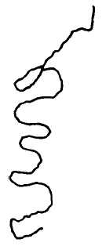

Bu durumda kesin olan şeyler ve kesin olmayan şeyler var. Şu kesin: oğlana kova burcunda hamile kalındı. Şu kesin değil: Meksikalı bir fetüse dönüşme olasılığı babamın hesaplarına göre, yüz seksen üç trilyon, altı yüz yetmiş beş milyar, dokuz yüz milyon dört-yüz beş bin üç yüz kırk sekizde bir, rahme düştüğüm gün öğle vakti gökten tepelerine yağan boku yıkamak için annemle birlikte girdikleri Pasifik Okyanusu’nda kulaç atarken yapıyor bu hesabı babam. Geri sayımın ilk günü diyorlar buna. Bense, yumurtalıktaki okuma dersine giderken mezarlıktan ilk geçişim diyorum; çünkü onlar şimdi o gün neler olduğunu hatırlasalar da, ben bütün olanları zaten biliyordum, babamın mikro yılanı annemin corona radiata’sına (corona corona değil ha, babamınki patlayan bir puroydu, hatta düşünüyorum da bir MIRV) gül yaprakları arasına uzanır gibi uzandığında biliyordum, o sırada büyük Kıllı Vadi muharebesinden geriye kalanlar jelatinsi zarı işgal etmişlerdi, de profundis clamavimus –ama kimse kendini rahat hissetmiyordu; hangimiz Doña Angeles’i (soyadı yok). Puebla, Veracruz, Guadalajara ve Mexico City’nin en nüfuzlu ailelerinin vârisi Don Angel Palomar y Fagoaga Labastida Pacheco y Montes de Oca’nın karısını dölleme şerefine nail olacaktı? Milyonda bir, şanslı pezevenk, talihli kambur. Hepsi deli gibi ilerlemeye, barikatı aşmaya, kabuğu kırmaya ve öyle her önüne geleni yemeğe çağırmayan bu Penelope’nin sadakatini bertaraf etmeye çalışıyordu, sadece bir kişiye geçiş vardı, savaşlardan dönmüş şampiyon Uiyseks, en büyük, kromozomların Muhammed Ali’si, número uno:
BENDEN Mİ SÖZ EDİYORSUNUZ?
Ben, takdire şayan, harikalar kutusu, bana izin çıktı, bir sesler ve anılar, aman of, yerler, zamanlar, isimler, şarkılar, yemekler, sevişmeler, konuşmalar, kekelemeler, hatırlamalar ve unutmalar bombardımanının ortasına düştüm, eşsiz BEN KRİSTOF ve genler.
“Suçlu hep genler,” diyor Fernando Amca.
“Doğru,” diyor Homero Fagoaga Dayı, “Suçlu Hegel.”
Neden birbirinden bunca nefret eden iki adam, birbiriyle hiç alakası olmayan Fernando ve Homero birlikte olmak, sürtüşmek, çarpışmak zorundalar? Yapmak istemediğimiz şeyleri yapmaya, kendimizi mahvetmeye bizi ne zorlar? Yalnız olmaktansa aşağılanmayı, hakarete uğramayı, hatta suç işlemeyi –cinayeti– tercih ettiğimizden mi bütün bunlar?
Mesela annemle babam artık yalnız değiller: Birlikte yaşıyorlar ve az önce beni yaptılar; BENİ. Bu hikâyenin başından sonuna kadar onları dinleyeceğim ve azar azar öğreneceğim ki birliktelikleri, aşkları ne oldukları ve ne olmak istedikleri, nelere sahip oldukları ve nelere sahip olmak istedikleri arasında sürekli bir çatışmayı dışlamıyor. Az önce hiçbir anlatı kuralını bozmadan (bunu iyi bilin haşmetmakatları) söylediklerimi şimdi tekrar vurguluyorum; çünkü annemle babam arasındaki fark şu: Başlangıçta Angel hakkında her şeyi öğreneceksin, ama sonunda Angeles hakkında çok az şey biliyor olacaksın. Böyle insanlar vardır, ben de bunu en başta belirtmekle bir şey kaybetmem-Onların içindeki zıt güçleri bilmek daha önemli: Neyim, ne olmak istiyorum; neyim var, neyim olsun istiyorum. Anlatımın yalçın merkezim de yalnız olan ben sana ne anlattığımı gayet iyi biliyorum, Sargıdeğer Okuyucu. Böylesi yalnız olduğumdan gezinip durmak zorundayım: yalnız kalmamak için neye ihtiyacım var; kendim, tek ve benzersiz Doğmamış Kristof olabilmek için ihtiyaç duyduğum o öteki kim?
Cevabım net ve kesin:
Sana ihtiyacım var. Okuyucu.
Günün hangi saati, hangi toplumsal sınıf, bu selva selvaggia’nın hangi mahşeri katmanı olursa olsun iki sorun vardır: nasıl yalnız kalmalı ya da nasıl iyi birilerini bulmalı. Ama Meksiko Siki’de, babamın büyüdüğü şehirde, esas mesele baş belalarından korunmaktır (diyor Angel Angeles’e).
Bana anlattıklarına bakılırsa başka ülkelerde edepli bir insan, birisinin gündüz çalışmak için ayırdığı zamanı veya fazlasıyla hak ettiği dinlenme zamanını, önceden haber verip randevulaşmadan ve randevuya da tam zamanında gelmeden ihlal etmeye kesinlikle kalkışmazmış; ya mavi pusulalar gönderir (ama bu pusulalar pek uzun ömürlü olmamış) ya da hiç değilse telefon ederlermiş. Meksika’da öyle değil. D.F. megalapolis kılığında bir köydür ve orada köy âdetleri geçerlidir. “Hemen çık gel, hadi.” “Şimdi oradayım tamam mı?” Krallar, türbeler, kabileler, sülükler, hepsi tamam.
Sülük tabir edilen bu toplumsal hastalığın en bulaşıcı türü “paraşütçü”dür, hiç haber vermeden günün ya da gecenin herhangi bir saati “damlayıverir", yemeğin ortasında gelir (asalak bir tipse davet edilmeyi bekler), sevişmeyi yarıda keser (tecrübeli bir röntgenciyse başkalarının zevk saatlerinin kokusunu alır), okumayı böler (bir beyin hastalığı nedeniyle kendisi okuyup yazamadığından başkalarının sözcüklerle haşır neşir olması sinirine dokunur).
“Çocuk hangi dili konuşacak?” diye soruyor annem ısrarla. Babam da dilimizin göz göre göre ölüp gittiğini ve sadece bu nedenle Homero Dayımın varlığını kabul edebileceklerini (annem ve babam) söylüyor. Bütün bunları görmüştük.
Ama paraşütçülüğün ya da huzur kaçıran baş belasının affedilir tarafı yok: konuşması gevezelikten, zırvalamadan, dedikodudan, boşboğazlıktan ve şampiyonlara yaraşır lafazanlıktan ibarettir, yine de bu yaratıklar istenmeyen ziyaretlerini kurbanın gözünde haklı çıkarmak için dramatik bahaneler uydururlar; ergenliğinde, babam Angel (kendi demesiyle) bu yaratıkları (iki cinsten de) mıknatıs gibi kendine çekiyormuş, özellikle de Colonia Juárez ve Colonia Cuauhtémoc civarlarında dolananları.
Öyleyse bu şehir, günün ya da gecenin herhangi bir saatinde çağrılmadan ya da istenmeden birden beliriveren, göçebe işgalcilerle dolu (si, j’ai bien compris), kapıyı çalıp (bambambam, Kimse yok mu? Taktaktak Ben şeytan! Evde kimse yok mu? Rahatsız etmiyorum ya? Maracas’ını ödünç verebilir misin? Buzdolabında biraz tepache yok mu?) Her nedense diyor, babam Angel; bu şehirdeki bütün tanıdıklarından ve arkadaşlarından daha fazla aranırmış, çünkü onlar ya hâlâ ailelerinin yanında oturuyorlarmış ya da enflasyon yüzünden evlerine geri dönmek zorunda kalmışlar ya da rahatsız, kalabalık pansiyonlarda oda kiralamak zorunda kalmışlar, eski mahallelere ya da yeni, kayıp mahallelere düşmekten korkuyorlarmış ve onların aksine Angel bir yetimmiş, ama güzel bir evi olan bir yetimmiş; hepsi de yeniden hortlayan on dokuzuncu yüzyıl disiplininden mustaripmiş (ya da daha eskilere dayanan bir disiplinden: Meksika’da fetret devri Rolling Stones’la başlamış, acımasız Dış borç Boks ringinde de sona ermişti: kenarda köşede söylenen en acıklı şarkı yine, petrolümden kala kala dört bin peso kaldı ayayayay, şarkisiydi; en neşeli şarkı ise, petropesonun ölümüyle ilgiliydi, kandırmacanın sonu, deponda ister misin bir kaplan kükresin?/ paradan haber ver ki boktan alet işlesin); birisi dedesiyle babaannesinin kapısını çalmış, rahip kılığında bir dilenci, sadaka istiyormuş:
“Lütfen anneannemin cenazesi için para verin.”
Angel’in babaannesi. Doña Susana Rentería, alyansını çıkarmış ve titreyerek onu rahibe vermiş. Sonra kapıyı kapatıp Angel’e sarılmış ve “Sakın bu yaptığımı Rigo’ya söyleme” demiş.
Eveet, asalak önceden randevu almaz, alsa da muhakkak gecikir; öte yandan, eğer habersiz gelmişse tam zamanında gelir (tanımı gereği); dedesi Don Rigoberto Palomar (doksan bir yaşında) ve babaannesi Doña Susana Rentaría de Palomar’ın (altmış yedi yaşında) Calle Génova’daki evlerine bağlı olan garajda yaşarken –gidip gelmeler söz konusu olduğunda yaşıtlarından çok daha serbestti– bir sürü paraşütçü babamın tepesine böyle indirme yapmıştı. Kendini Don Homero Fagoaga ve kardeşleri Capitolina ve Famesia’nın zulmünden kurtardıktan sonra babamın ünü yayılmıştı: yalnız yaşamasının nedeni (rivayete göre) devlet okulundaki –1982 KAHRAMANLARI– diğer kızlar ve oğlanlardan daha saygın, daha olgun ve daha güvenilir olmasıydı. Önceleri özel okul olan okulu Don Mamelin Mártir de Madrazo (finans çevrelerinde Joker Roger diye bilinirdi), toplumu ne kadar çok düşündüğünü göstermek için kurmuştu. Kaçırılıp öldürülmeden önce Meksika’nın en çok kamulaştırılmış bankeri olan Don Mártir, toplumsal saygınlığının son kalesinin de kamulaştırılacağım tahmin edemezdi elbette. Okulun adını değiştirme zahmetine bile girmemişlerdi; çünkü 1982 KAHRAMANLARI tanım gereği, kamulaştırılanlar kadar kamulaştıranlara da uygulanabilirdi; dahası, okulu kamulaştıranlar, günün birinde hükümetten ayrılıp özel sektöre geçtiklerinde, kendileri de ad infınitum bir sonraki devrimci hükümet tarafından kamulaştırılacaklardı. Neticede, Angel Palomar y Fagoaga okuldaki ününün bedelini ağır ödedi; çünkü asalaklar günün her saati damlayıp, metafizik ya da fiziksel ıstırabı bahane olarak kullanarak ona dertlerini anlatıyorlardı: Birisiyle konuşmazsam intihar edeceğim, aslında şu demekti: İntihar etmezsem biriyle konuşacağım, bu arada dolapta bir şeyler var mı (okyanus), ne okuyorsun {Tristram Shandy’nin Hayatı ve Fikirleri), çok yorgunum (sen de yat tatlım) sen yorgun değil misin? (tabii, şimdi ben de yanına gelirim) Hangi plağı koyayım (en sevdiğim grup Immanuel Kart’ın son plağını koy), belki de sen bir Kant’o söylesen daha iyi olur.
Kel akbabanın hayatı
Ah aman ne sefillik
Yıl boyu arşınlar semayı
İflah olmaz o kellik
bana hakaret et: orospu! fırfırlarımı, pelerinimi, tokamı çıkaracak mısın, beni soyup, ödevime yardım edecek misin? Şuram çok ağrıyor, neden acaba? Üzgünsündür diye düşünmüştüm–yapacak bir şeyin yok–her zamanki aylaklık–o kadar yalnızım ki–beni aldattı, domuz–dışarıdayken, yerken, uyurken, seni ziyaret etmemi istemez misin?–bana söylemelerini senin söylediğini söyledikleri doğru mu?–ne demek istediğini öğrenmek için geldim–mal var mı?–beni kız kardeşinle tanıştırır mısın?–benim ekmeğe ihtiyacım var oğlum–bana lastik ayakkabılarını ödünç verir misin?–2 Kasım için havai fişek uzmanı arayan var mı? ücretli hakaretçi mi?–para oğlum, itibarın yoksa banka kredi vermez, hiç banka yöneticisi tanıyor musun Angelito?–tarağını ödünç verir misin?-yarağını ödünç verir misin?–muz kabuğunda tamale tarifi var mı sende?–ödünç–ödünç–arayabilir misin?–köşedeki eczaneden bir Equanil istetemez misin?–yarın devrim olacak gibi–faşist darbe–askeri darbe–komünist darbe–konserve depola, Angel, hemen kuşatma düzenine geçelim–tırnak cilası tuvalet masasında mı?–barmen, soğuk biralarımız nerede kaldı? ne? bize poz mu yapıyorsun, hayrola?–Playhoy koleksiyonumu sana bırakabilir miyim, bizimkiler anlamıyor da?–doldurulmuş oyuncaklar koleksiyonum, Angelote, annem bir görürse–Toyota Süper XXX’imi sizin avluya bırakabilir miyim, Angel, babam şu ahlaki yenilenme meselesini biraz abartıyor da–bavulumu sana bırakayım, bir yolculuğa çıkmam gerekebilir–Almazân posterleri koleksiyonuma ne oldu?–Avenila Landin plaklarım nerede?–López Portillo’nun en sevilen metaforlar kitabım nerede?–sutyen koleksiyonum nerede?
On altı yirmi yaşlar arası asalaklar babama asılıp durdu, paraşütçüler üzerine yağdı, sanki (gittikçe daha katı bir ana-baba vesayeti altında büyütülen) neslinin bağımsızlığı Angel’e ve Paseo de la Reforma’daki Bağımsızlık Meleğini gören evine bağlıydı. Angel ve arkadaşlarının doğup büyüme talihine erdiği ölüm, baskı, açılma, reform, zafer, çöküş ve sertlik görmüş, o hareketli, istikrarsız yirmi yılın bedeliydi bu sanki: On sekiz-yirmi iki yaşları arasında reşit olmaları ertelenmişti ve ailelerinin baskıcı kontrolü devrim-öncesi Porfirio Díaz devrinin en katı ailelerine yaraşacak ölçüde artmış ve güçlenmişti; ondan sonra, diye düşündü, ayrıcalıklı gözlemci babam, kaçınılmaz tepki geldi, 1990 Felaketinden sonraki çaresizlik, yalnızlık, kaçış ve evsizlik.
Ama özgürlük yanılsamasının kendisinin Angel’in kendine ait adasından kaynaklandığı da söylenebilir; bir de şundan: Şehir hakkında savrulan en kötü kehanetler birbiri ardına gerçekleşirken ve hiç kimse bunları engellemek için parmağını bile kıpırdatmazken, can çekişmekte olan şehrin nihai kurtuluşu (beyhude yanılsama!) hâlâ belli bir uygarlık ışıltısı taşıyan tek kentsel vaha olan Colonia Juárez’in varlığına bağlıydı sanki. Angel’in kulaklarında, genlerinin kulaklarında ve limbodaki vârislerinin kulaklarında, durmadan pompalanan, hastalıklı, kirli suyun sesi uğulduyor, kendi yüreğinin atışlarının ve kırılganlıklarının devasa bir paraleli.
Calle Génova’daki garajda, babam kendini bir çöp yığınıyla baş başa buldu ve onların hiçbirinin –gerçekten de hiçbirinin– kurtarılmaya değeceğini düşünmüyordu; iğrenç seksenlerin başında Başkan Ronald Reagan’ın pek sevdiği deyişle piyasanın büyüsü işe yaramamıştı: Her şeyi yerle bir etmişti; bu sırada insanları da çöplerin saklanması gerektiğine inandırmıştı. İşin kötü tarafı, kendi mağarasında onu gömecek hale gelen artık dağından kurtulamıyordu Angel. Yaşama şerefine eriştiği devrin en özlü tanıklığından mahrum kalmaya razı değildi: kâğıt parçalan, vinil ve dökülmüş saçlar abidesi, Hitler’in şeytani dehası yaşadığı çağa en doğru teşhisi koymaktan ibaretti; Auschwitz’deki tutsak eşya dağları. Kim kendi masum Auschwitz’ini barındırmaz ki tavan arasında, garajında, ilaç dolabında, sandığında ya da arka bahçesinde?
Böylece babam Angel, yirmi yaşına geldiğinde, yani merhum mucit anne ve babasından kalan mirası almasına kanunen bir yıl kala, ekonomideki muhafazakârlığından, hem ilkelerinden hem de uygulanma biçimlerinden gurur duyan bir dünyada yetiştiğini sanırken aslında bir çöplük ve ekonomik anarşi dünyasında yetişmiş olduğu kafasına dank etti. Gerçek bir yalandan ibaretti ve bunun faikına varmak babamın canını fena halde sıktı.
Ortaya çıkışımın ikindisinde, sanki hayatım meni ve yumurtanın rastlantısal birleşmesinden çok dile bağlıymış gibi konuşmaya başlıyor genlerim ve kromozomlarım: Annemle babamın hayatın beşiği olan denizin içinde konuşmalarını dinliyorum, sualtına sığınan ve orada gelişen canlılar dışında evrendeki bütün canlıları kavuran alev alev dünyanın tek soğutucusu deniz, şunu kesinkes belirtiyorum, o sualtı canlıları her birimizin içindeki ilkel okyanusu terk ederek, bir nevi tuzlu suda ilelebet yüzmeye başlarlar; çünkü esas mesele, haşmetli okuyucunun da bildiği gibi, kurumamaktır. Asla, hiçbir koşulda: Kurursan ölürsün, pulsuz bir balık, tüysüz bir kuş, kürksüz bir köpek yavrusu gibi: içindeki vahşi okyanusa ihtimam göstermeyen insana yazıklar olsun, çünkü birbiriyle iç içe geçen iki yaratımdan ona kalan tek şey budur: dünyanın yaratılmasından ve çocuğun yaratılmasından. Bunu söylüyorum; çünkü annemle babamın bir öğleden sonra Pasifik Okyanusu’nun içinde muhabbet ettiklerini hissediyorum, bir başka okyanustan, toz okyanusundan, bir şehirden söz ediyorlar: Sanırım günün birinde beni de oraya götürecekler; çünkü durmadan ondan söz ediyorlar, durmadan onu düşünüyorlar, durmadan onun hakkında tahminlerde bulunuyorlar ve ondan çok korkuyorlar. Mesela: “Bak, Angelito,” diyor onun (benim, bizim, bendenizin) dedesi General Rigoberto Palomar, “takribi 1900 senesinde Porfirio Díaz lağım kanallarını şehirden daha düşük bir seviyeye yaptırmıştı. Ama şimdi şehir gevşek yatağına battı ve lağım seviyesi bokumuzdan daha yüksekte kaldı. Bok lağım seviyesine çıkıp akabilsin diye dünyanın parası harcanarak sürekli pompalama yapılıyor. İki dakikalığına pompalamayı kesseler Mexico City boka batar.”
Başka türlü bir asalak güruha eklenene kadar Angel her türlü şeye tahammül etti. Uzun boylu, güçlü kuvvetli, esmer, bıyıklı bir delikanlıydı bu; gözleri, 1915’te Casasola’nın Sanbom’da kakao içerken görüntülediği gerillalardan birinin gözlerine benziyordu. Şimdi gözlerimin önünde: onu 1982 KAHRAMANLARI okulunun koridorlarında görmüştüm, ömrünü Zacatecas seferinde top arabası çekmekle geçirmiş gibi yürüyordu, omuzları goril gibiydi; görünmez fişeklikler çatılmıştı göğsünde, koskoca kafasını kararmış bir hasır şapka örtüyordu; gözlerini her kim kaçırmazsa onunla şahsen karşı karşıya gelme ve yok olma riskini taşıyordu. Adı Matamoros Moreno’ydu.
“Senin için ne yapabilirim, birader?” diye sordu Angel, kapıyı açtıktan sonra, şaşırma kabiliyetini çoktan yitirmişti. Eşikten sokağa doğru yeşil bir mısır koçanı yuvarlandı.
“Beni hatırladın mı?”
“Seni kim unutabilir ki?”
“Gerçek mi söylüyorsun?” Angel’in arkasındaki kullanılmış kondomlar ve kurumuş kâğıt mendiller dağına esaslı bir şehvetle bakarken korkunç dişleri ortaya çıktı. “Bahse girerim adımı hatırlamıyorsundur.”
“Petero Palots,” dedi babam ilgisizce; amacı saygısızlık etmek değildi, sadece tehlikenin farkında değildi.
“Ne diyosun lan?” diye homurdandı Matamoros Moreno.
“Bak hocam,” dedi babam, “öyle kapıyı çalıp, on yıl önce seninle ve diğer iki yüz hıyarla, orospu çocuğu öğretmenin bütün zamanını yoklama yaparak geçirdiği bir sınıfta, ülke haritasına bakarak vakit geçiren birine adını bilip bilmediğini sormak pek de hoş bir hareket değil. Tek hatırladığım, naçizane kulunuz Palomar’ın üzerinden de geçerek Aguliar’dan Zapata’ya varmak tam altmış dakika sürüyordu...”
“Moreno,” diye homurdandı ziyaretçi, bu hatırlatıcı itelemeden sonra babam. Cumhuriyet haritasının çekmeden (1990’daki felakette küçülmüştü!) önceki halini görür gibi oldu ve beyninde bir şimşek çaktı.
“Tabasco Moreno.”
“Çok güneyde.”
“Jalisco Moreno,” dedi babam çekinerek.
“Daha kuzeyde,” dedi Moreno melankolik bir sesle.
“Sonora Moreno.”
“O, O’yla bitiyor,” dedi, neredeyse hatırlanmak için yalvarıyordu-
“İsmim bile maçodur, Palomar.” Binlerinin bir manken kafasına yapıştırıp orada unuttuğu takma kirpiklere bakıyordu.
“Tabii ya,” diye bağırdı genç babam, “tabii o ismi kim unutabilir ki: Matamoros Moreno. Beni hazırlıksız yakaladın. Evet, senin için ne...?”
Daha o cümlesini bitiremeden, Matamoros kapı aralığına ayağını koymayı başardı. “Beni faka bastıramaz,” diye düşündü babam, “bu kadarı da olmaz.” Ama o orangutandan korkuyordu.
“Yusuflamana gerek yok, Palomar,” dedi herif, kapının aralığında o kaplan gözlerinden birini kırpıyordu; sesi o kadar yumuşaktı ki babam kendinden utandı.
“Sakin ol, korkak. Beni ekmeye kalkma,” diye ekledi; sesindeki haşinlik babamın, Matamoros’u kolay kolay içeri almama kararının isabetli olduğunu gösteriyordu.
“Sakin ol, dostum,” dedi Matamoros bir süre sonra; sesi babamın ruhunu sarstı ve ne kadar korksa yeri olduğunu kanıtladı.
Sonradan kendi kendine, birisinin günün birinde ona edebi bir metin hakkında fikrini sormasından hep korktuğunu itiraf etti. 1982 KAHRAMANLARI’ndayken çok kitap okuduğunu herkes biliyordu. Quevedo’dan bölümler okurdu. Montaigne’den alıntı yapardı. López Velarde hayranıydı. Bilim adamı babasıyla annesine ait olan muazzam kütüphane elinin altındaydı. Quevedo’dan alınma düsturu şuydu: Hiçbir şey beni şaşırtmaz. Dünya beni büyüledi. Ama Matamoros Moreno, ilk edebi çalışmasını ona teslim ediyordu, ona samimi fikrini soruyordu, 1982 KAHRAMANLARI’ndayken onu uzaktan uzağa beğendiğini, sınıfın en çok kitap okuyan, en kültürlü çocuğu, olduğunu düşündüğünü söylüyordu... Babam okul arkadaşı Matamoros Moreno’nun edebi çabalarını okumak için boş şişelerin, bisiklet lastiklerinin, yamulmuş karton kutuların, yabancı porno koleksiyonlarının arasına oturdu.
Okuyucudan bir sonraki boş sayfayı, babamın yirmi yaşındayken bir ikindi vakti okuduğu, Matamoros Moreno’nun metninin kendi versiyonuyla doldurmasını rica ediyorum. Metin hakkındaki yegâne ipucu bazı istatistikler: Matamoros yirmi kere “yürek"; on sekizer kere “kabarmış ten” ve “beklentili ten” demiş; on beş kere “Kutsal Meryem” diye haykırmış, bu bereketli ana on bir kere “beyaz saçlı” diye nitelenmiş, sadece on kere “küçük pamuk yumağı” denmiş; on dört tane “göz alan ışıltılar", gül çalıları arasında on üç ceset ve on iki çılgın ihtiras; bu celsede sadece dört kızıl dudak.
Angel’in içinden gülmek gelmiş. Ama üç şey onu durdurmuş.
Birincisi, 2. Bölümde, sanki zorla alkış almak için, Matamoros sadece şunu demiş:
MEKSİKA GİBİ BİR ÜLKE DAHA YOK
Sİ2CE DE ÖYLE DEĞİL Mİ?
Bu demagoji girişimi 3. Bölümde süslemeci bir edayla yinelenmiş:
BUNU BAŞKA BİR ULUS İÇİN YAPMAZDI
Guadalupe Bakiresi milliyetçi teröre dinci terörü de ekliyordu ki babam buna karşıydı. Matamoros’un büyüklüğü, zirvesinin en düşük noktası, alfasının omegası olmasıydı: en yüksek noktası en aşağıdaydı; yükseliş olmadığı gibi düşüş de yoktu; cümleleri bir dağın en alçak noktasından çok bir vadinin en yüksek noktasıydılar.
Ama üçüncü ve esas sorun bütün bunları ona söylemekti.
Ya da imayla anlamasını sağlamak.
Matamoros ona adres vermemişti tabii: Haftaya geleceğini söylemişti. Posta artık çalışmıyordu, bunu bilmeyen yoktu. Babam Moreno için bir haftanın gerçekten de bir hafta olacağını tahlil etti ve yedinci gün geldiğinde, üzerine, “Çok ilginç” notu iliştirilmiş sarı bir zarfa koyduğu metni dış kapının tokmağına astı.
Matamoros Moreno’nun şaşmaz ayak seslerini saat tam üçte duydu, yedi gün tam bu saatte sona eriyordu. Nefes bile almadan kulağını kapıya dayadı. Kâğıt hışırtıları duydu. Sonra uzun, volta adımları uzaklaştı. Babam asayiş berkemal mi diye kapıyı açtı. Matamoros’tan eser yoktu, ama metin hâlâ kapıdaydı. Matamoros babamın notuna bir not eklemişti: “İlginç olan ne? Yarın aynı saatte geri geleceğim. Biraz daha gayret göster. Beni atlatmaya çalışma.”
Babam huzursuz bir gece geçirdi. Matamoros’la dalga geçmek kendini fiziksel tehlikeye sokmak demekti. Bu yüzden de babam bütün sabahı alay ve korku, korku ve alay arasında gidip gelerek geçirdi: Matamoros Moreno gülünçtü, ama korkunçtu da. Angel Palomar y Fagoaga’nın imkânsız özel hayatını istila eden bu en üstün işgalciye ne yapmalıydı?
Dedesi Rigoberto Palomar’a akıl danışmanın eşiğindeydi. Ama bunu sadece en önemli durumlarda, başka çıkış yolu olmadığında yapardı. Dedesi onun daha becerikli, hayal gücünün de daha canlı olmasını beklerdi. Bu, aralarında kâğıda dökülmemiş bir anlaşmaydı. Hem Angel dedesinin ikide ya da dörtte yapacağı ya da yapmayacağı ne yapacaktı ki saat üçte?
Tam üçte Matamoros belirdi. “Eserim hakkında ne düşünüyorsun?”
“Metin-dışı kaçışları provoke ediyor.”
“Ne demek yani?”
“Yani metafizik yer değiştirme, anlamlandırıcı pratikleri kontrol ederek, prozodik ve morfolojik örnekleri dönüşüme uğratıyor ve nihayet dilbilimsel erosun zaferini hızlandırıyor ki erosun kendisi de homolog olanın mantarsı ve tapası ses aynılığıyla ilintili.”
Matamoros Moreno sert sert babama baktı. “Cantinflas bile bundan iyisini söyleyemezdi.”
Paleolitik bir ironiyle garajın içine baktı, sanki başkalarının yazdığı çuval çuval aşk mektuplarını okuyabilecek ve terk edilmiş motosikletlerin pasını alabilecekmiş gibi bir hali vardı. “Yarın gerçek fikrini öğrenmek için geleceğim, Palomar. Unutma, üç yumrukta işin biter.”
Zincirini sürüyerek, top arabasını çekerek uzaklaştı. Babam gelmiş geçmiş bütün sınıf arkadaşlarına küfürler yağdırarak arkasına yaslandı. Korkudan ve gülmekten uyuyamıyordu: Matamorik şiddeti gördüğü kâbusların arasına, sınıf arkadaşının kaleme aldığı nadide cümleleri hatırladıkça, kendini bilmeden attığı kahkahalar karışıyordu. Üç yumrukta işin biter, diye uyarmıştı onu eski okul arkadaşı (Allah muhafaza!) neyse. Ama gözlerinin içine bakıp, bak Matamoros sen farkında olmadan bir mizah metni yazmışsın diyerek kahkahalar atmayı gözü yemese bile; bak Matamoros yazdıkların bir boka yaramaz diyecek cesareti olmasa bile, en azından üçüncü ve muhtemelen son kez sağı solu belli olmayan bu intikam meleğinin karşısına çıkma yürekliliğini gösterecekti. Ne küçümseme ne korku. Bakalım ne olacaktı.
Angel Palomar kapıyı açtığında Matamoros Moreno oradaydı. Babam Matamoros’u tepeden tırnağa gözünün önüne getirebiliyordu, ama onu bir başkasıyla hayal bile etmemişti: Hayır, Matamoros’un korunmaya ihtiyacı yoktu; o kendi kendinin goriliydi. Hele hele bir kadınla birlikte hiç düşünemezdi onu Angel, bu kadın bir korunma ya da bir şantaj aracı olsa bile; Matamoros bunu ona nasıl yapabilirdi Hayır, bu kadarı da olmazdı. Ama evet, olmuştu. Sadece bu kadın on bir yaşında bir kız çocuğuydu. Esmer, tombul, pembeler giymiş, saçları örgülü, kâküllü, yanakları gamzeli, küçük, siyah gözlü bir kız; Shirley Temple’ın Meksika şubesi.
“Kızım. Tabii gayri meşru. Onu tek başına bırakamadım. Perşembeleri onu bıraktığım yer kapalı oluyor. Kusura bakma. Adı Colasa. Nicolasa’nın kısaltılmışı. Nicolasita’yı da sevmiyorum. Amcaya bir öpücük ver canım.”
Nemli, yapış yapış, çikolatalı, balonlu çikletli, kokulu bir öpücük. Babam üç ve on üç yaşları arasındaki kızların yanında dizginleri koyverdiğini –daima– itiraf ediyor. Korumasız. Bir kurban. Colasa Moreno karşısında bir hiç.
“Colasa Sánchez, pardon, annesinin soyadı. Ben cinsiyetçi değilim. Neden hayatı boyunca bir erkeğin soyadını taşısın ki, önce babası, sonra kocası? Kendi soyadını, annesinin soyadını taşısın daha iyi, haksız mıyım?”
Babam Angel tam bir kadının ne olursa olsun bir erkeğin soyadını taşıdığını söyleyecekti, ne de olsa annesinin kızlık soyadı bile bir adamın soyadıydı (dedesinin), bu yüzden de Colasa’nın annesi kendi babasının soyadını taşıyordu, ama...
“Eee benim yazdıklarını hakkında ne diyeceksin, dostum?” Yelkenleri suya indiren babam bu metnin şiirsel düzyazının olağandışı bir örneği olduğunu söylemek durumunda kaldı; duygusallık tuzaklarından ustalıkla ve zekice uzak durulmuştu; evlat sevgisini bundan daha güzel anlatan bir şey daha olamazdı. Dostoyevski de öyle dememiş miydi zaten, Budala’nın, NE?; hayır hayır, o Rus romanının başlığı, tamam mı? TAMAM, devam et, dostum, söylediklerin hoşuma gidiyor, Colasa’nın da hoşuna gidiyor, di mi canım: evet, baba, amca gerçekten de çok iyi ve akıllı, di mi baba?: Angel Palomar acıyla inliyor: “Bu tür yazıların yer aldığı bir antolojiye gayet iyi yakışır.”
“İcabına bakarız.”
“Neyin icabına bakacaksın, Matamoros?”
“Yayımlatacağız dostum. Yarın aynı saatte gelirim. Hadi gel Colasa. Cici amcaya teşekkür et. Yardımları sayesinde ünlü ve zengin olacağız evladım. Hatta daha da önemlisi mutlu olacağız. Sen iyi bir adamsın, Palomar.”
Sanki babası suflörlük etmiş gibi Colasa Sánchez şarkı söylemeye başladı:
Kalbimin sultanı bu küçük çiftlik
Bana mutluluk kaynağı
Mavi dağlar arasında gizli
Göğü kaplar gökkuşakları
Onu kapıdan dışarı itelemeden, kaba davranmadan dışarı çıkarmak, hele bir yarın olsun da her şeyi hallederiz sözüne inandırmak çok zor olmuştu, tabii, şu meşhur antoloji, evet, ha ha ha, kız mutlu çiftlik şarkısını söylüyor, küçük yuvam, hanımeli kokulu...
Böylesi korkunç karakterler karşısında duyduğu fiziksel korku yüzünden ya da onlara gerçeği söylemenin ahlaki korkusu yüzünden ya da onlara gülmek istemenin psişik korkusu yüzünden kaçmamıştı Matamoros Moreno ve kızından; babam yirmi yaşında kasım ayında bir ikindi vakti Oaxaca otobüsüne sadece onlara yakınlık duyduğu için binmişti: Acı çekmelerini istemiyordu. O kahrolası Matamoros’un kızı Nicolasita’yı (sinir bozucu bir takma ad!) dedesinin evinin karşı köşesinde nöbete diktiğini nereden bilecekti ki?
Anlaşılan sümüklü gece gündüz orada kalıyordu, kır tarzı derme çatma bir barakanın önünde bağdaş kurmuştu, grevde gibiydi, gece çalışması için bir feneri, siyah-kırmızı bir bayrağı ve dumanı tüten bir tencere fasulyesi vardı. Bu basit çocuğun elinde, nuh nebiden kalma, güve yenikli bir charro Mamerto bebeği vardı, babam bu karakteri birisinin garajda bıraktığı çizgi romanlardan hatırlıyordu.
Colasa babamı görür görmez, kalın, siyah bıyıklı charro’yu elinden atıp, parmağıyla babamı göstererek bağırmaya başladı:
“Durdurun! Durdurun şu adamı! Utanmaz sahtekâr kaçıyor! Üçkâğıtçı herif sözünden döndü! Durdurun! Sende insaf varsa benim gibi zavallı bir kızı bırakıp gitmezsin! Durdurun onu! Korkak kaçıyor, şu alçağı durdurun!”
Ödü kopan babam, deli gibi Paseo de la Reforma’ya doğru koşmaya başladı, âdeti olduğu üzre Don Valentín Gómez Farias’ın heykelini selamlamak için, hatta Bağımsızlık Meleği’ne bir öpücük yollamak için bile durmadı. Bir taksiye atlayıp, saç örgüleri dikilmiş, ağlayan Colasa’yı arkada bıraktı. Otuz saat sonra Oaxaca’ya vardığında babam o kadar sinirliydi ki Fagoagaların evinden kaçtığından beri ilk kez bir ayine katılmak için sarı Felipe Neri Kilisesi’ne girdi. Altın dumandan yapılmış –genlerim yemin billah ediyor– kiliseye tatlı bir huzur içinde baktı. Matamoros Moreno’nun dili yüzünden sürgün edildiği Oaxaca’da, bir tür inanç, bir yarı-delilik, her şeyden önce de bir vicdan edimi olarak kendi dilini bulacağını nereden bilecekti ki?
O huzur anında hayatı boyunca Federal Bölgenin sınırları dışına hiç çıkmadığını fark etti: Ufku hep dağlar arasına, tropikal bölgenin en yalçın sırtları arasına ve buz gibi bir hava tabakasının altına hapsedilmiş vadi olmuştu; dünya tarihinin en düşüncesiz, en basiretsiz, en mazoşist, en intihara yatkın, en aptallar aptalı şehri. Orayı asalakların hakaretlerini ve çöp dağlarını düşünerek terk etmişti.
Şimdi, saf ve beklenmedik bir Kasım fırtınası gökyüzünü temizlemişti, toprak yeniden dirilmişti: Oaxaca’daydı.
Soluğun, tütsü mavisi
“Sonra Oaxaca’ya kaçtım,” dedi babam anneme, “Matamorik öfkeden çok uzaklara. Hayatımda ilk defa D.F.’ten dışarı çıkmıştım. Çantamda çiklet ararken Babaannem Susana’nın mektubunu buldum, Oaxaca’ya gittiğimde Bayan Elpidia’yı bulmamı tavsiye etmişti, bu hanım kendi reklamını yapmıyordu; ama öneri üzerine misafir kabul ediyordu ve yemekleri de krallara layıktı. Hem de evi şehrin meydanına çok yakındı.
Babaannem içinde iki bin peso olan –masraflar için– bir zarfla, López Velarde’nin bütün eserlerinin toplandığı bir cildi de mektubun yanına katmıştı. Ben hiçbir şey söylemeden gideceğimi nasıl anladığı ise bol miktardaki aile büyücülükleri arasında kıskançlıkla andığım bir şeydir ve büyücüler arasında o şeref kürsüsündedir.
Orada sıkılacağım, diye düşünmüştüm, ama yanılmışım; çünkü Doña Elpidia’nın evinin avlusu ağaçların serin gölgesindeydi ve kafes içinde şakacı bir papağanı da bünyesinde barındırıyordu. Yaşlı hanım, bana dağ manzaralı bir oda verdi ve dünyanın en güzel sarı mole’unu ikram etti. Gevşek bir ritim edindim, kendi gövdemin ritmi, kendi kalbimin ritmi; hayatım boyunca bir mikserin içinde yaşamış olduğumu fark ettim; nasıl yürüneceğini, durulacağını, dinlenileceğini, bakılacağını ve koklanacağını öğrendim.
Işığa karşı değil, ışıkla yaşamaya başladım; bağırsaklarımla savaş halinde değil, sindirimimle uzlaşarak; zamanında uyuyup zamanında uyanarak. Yavaş yavaş oldu bütün bunlar; kendi kendini yontan bir şafak; ani bir ikindi; yeşilli, siyahlı, yaldızlı bir şehir. Meydanda oturup İtalyan opera uvertürleri çalan orkestrayı dinleyecek zamanım vardı. Santa Rita alanında frenkinciri dondurması yiyecek zamanım vardı. Tek başıma kiliselere girecek zamanım vardı. Oaxaca bana sadece kendini verdi. Bu yeni bir şeydi: dünyadaydım, dünyadan sürülmemiştim. Oaxaca’nın ilk hediyesi buydu.
Bir hafta sonra huzursuzlanmaya başladım. Cinsel gücümün doruklarındaydım; itiraf etmeliyim ki psikiyatrik tedavi ve eşya depolama karşılığında Calle Génova’daki mağaramdan geçen bütün hatunların tadına bakıyordum. (Bunu sonra anlatırım. Seksi hep Aralıkla özdeşleştiririm, Distrito Federal fıstıkları o bir ay boyunca bütün sene düzüştüklerinden daha fazla düzüşürler. Yeni yılda yeni bir başlangıç yapmadan önce, o başlangıç da şudur: “Ocakta düzüşmeye başla”.) Sırf cinsel açlık yüzünden, Oaxaca’da bulduklarımı kaybetmekten korkuyordum. Oralı kızların her cumartesi pazar yürüdükleri yolun aksi tarafında yürüyordum meydanın etrafında. Nafile. Özellikle başlarını çeviriyorlardı sanki. Dondurmalardan, Wilhelm Tell uvertüründen, yeşil yapraklı defnelerden ve temiz, düzgün dağlardan sıkılmaya başlamıştım.
Doña Elipidia’nın mole'ları bile canımı sıkmaya başlamıştı... Tek yaptığım papağanla konuşmaktı; sıkıcı, ılık bir pazar sabahı azimle ona Quevedo’nun müstehcen mısralarını öğretmeye çalıştım:
Kim ki orospulara güvenir o hadımdır.
Ama Döna Elpidia’nın papağanı benim verdiğim klasik eğitime karşı duyarsızdı, durmadan aynı şeyi tekrarlıyordu; papağan gibi:
Kim ki çekirge yer buradan ayrılamaz...
Doksan dokuz yaşını kutlamaya hazırlanan Doña Elpidia da sanki ben papağanın dediğini duymamışım gibi mutfak kapısının arkasından seslendi, “Kim ki çekirge yer buradan asla ayrılamaz...”
“Papağan çekirge mi yemek istiyor, Doña Elpidia?” dedim nezaketle; hem bu ipucunu nasıl değerlendireceğimi de biliyordum.
“Evet oğlum, pazar buradan birkaç sokak ötede...” dedi bana dişsiz ağzını göstererek.
Elpidia’nın evinin önündeki arnavutkaldırımı yoldan Pazar pazarına gittim ve bir sürü tezgâhta kırmızıbiber soslu kızıl çekirgeler satıldığını gördüm; bir yerde de Matamoros Moreno’nun gayri meşru kızı Colasa Sánchez’e benzeyen bir kız vardı –aynı kız mıydı? kardeşi miydi?– ve bana karşı koyamayacağım bir tebessüm fırlattı (bir daha hatırlatayım Christa Balilla, üç ila on üç yaş arası kızlara hiç karşı koyamam). Bana çekirge dolu küçük, plastik bir torba uzattı. Ama onu almak istediğimde bana vermeyi reddetti, onu göğsüne bastırıp parmağıyla onu izlememi işaret etti.
Beni pencereleri sokağa bakan ve bir koridoru andıran küçük bir kiliseye soktuktan sonra uzattı çekirge torbasını. Sonra eliyle ağzını kapatarak kaçtı.
İnsanın damağına şafağın havai yanığını bırakmadan önce dişlerinin arasında çıtırdayan o enfes böcekleri yedim (Matamoros dixit). Sonra bu barok şatafat şehrinde gördüğüm en basit kilise olan San Cosme ve San Damián Kilisesi’ne girdim.
Kalabalıktı.
Ama sadece bir Agueda vardı.
Onu tanımamam mümkün müydü? Normalde, İsa’nın önünde diz çökmüş dua eden bir kadına dikkat bile etmezdim; ama bu pazar kalabalığında, onu çelişkili bir biçimde prestijli kolalı etekleri ve korkunç matem giysisi içinde diz çökmüş görünce ne olursa olsun her şeye inandım.
Bir gece önce yalnız yatağımda, mastürbasyon yapmayayım diye kendimi zor tutarak. Kuzen Agueda’nın parmaklarının “yankılı koridorda yavaşça ve ısrarla” salınışını hayal ederek okuduğum López Velarde’nin şiirinden alıntı yaptığımı fark edince tabii ki dilimi ısırdım. Onu bu sabah hatırlamamam mümkün müydü; daha dün gece ona o küçük, kımıltılı, sinirli kurbanı vermiştim, üzerine kırmızıbiber serpilmiş bir çekirgeydim, onu şimdi gördüğüm gibi hayal ediyordum, matem elbiseleri koladan hışır hışır, gözleri bakır, yanakları al al ve beni ince, becerikli parmaklarıyla tespihinin boncuklarını okşadığı gibi okşamasını istiyordum.
Ah benim erdemli, saf ruhum! Ben tam kadına ve mekâna yaraşan dilin baştan çıkarıcılığına teslim olmak; direnmeyi bırakıp o dilin kendisi olmak üzereyken Agueda siyah dantellerle örtülü başını bana çevirdi. Döndü ve bana baktı –bir an için (anlatırken uzunmuş gibi geliyor, ama bir anda oldu)– o inanılmaz bakır sülfat gözleriyle.
“Ücra bir yerde, fakir bir sevgilim var": birbiriyle kafiyeli o gözlerde son derece mütevazı bir mutluluk seçtim, ah benim doğmamış oğlum, sonra da bütün o buruk can sıkıntım akıp gitti. Agueda’nın gözlerinde uyumu değil, huzuru keşfettim.
Bana bir an baktıktan sonra matemini fildişi ve sedef rengi şalına sardı. Peşinden kapıya gittim. Benden kaçmaya çalışmadı. Durup da “Şerefimle oynamayın bayım,” demedi.
Tam aksine. Ara sıra dönüp bana bakıyordu; ben de her seferinde durup, nereye giderse gitsin peşinden geleceğimi söylüyordum: Agueda. San Cosme ve San Damian’in parke taşlarından Santo Domingo’nun yaldızlı şatafatına gitti, oradan da Sağlık Azizi’nin tapınağına, orası çiçek ve yeni pişmiş kurabiye kokuyordu; son olarak da modern mimariyle yapılmış San Felipe Neri Kilisesi’ne gitti ve uzunca kaldı. Akşam üzeri beş olmuştu ve Barcelona’da Gaudi’nin elinden çıkmışa benzeyen, ama aslında on yedinci yüzyılda Oaxaca’daki ustaların yaptığı çiçek bezemelerinin arasında kımıldamadan duruyordu. Kılaptanlar ve tüyler giymiş olan Atocha Kutsal Çocuğu’nun bakışının sitemden çok rekabet içerdiğini düşünmeye başlamıştım.
“Delikanlı, kapatıyoruz,” dedi kirli, kahverengi giysi giymiş olan, kel kafalı bir kilise kayyumu, kim bilir kaç zaman sonra.
Ama parıltılı yas giysileri içindeki Agueda’ya hiç sesini çıkarmadı.
Onun hiç kımıldamaya niyeti olmadığını görünce günah çıkarma bölmelerinden birine, pederin oturduğu tarafa oturayım dedim. Kapılar kapanmış, ışıklar söndürülmüştü; ama ben saklandığım yerden çıktığımda Agueda hâlâ orada diz çökmekteydi, Kristof oğlum, ben de göz göre göre onun bir kızkurusuna dönüşmesini istemiyordum.
Yanına yaklaşıp omzuna dokundum, bana döndü. Bütün simgeleri gözlerine bağlıydı: Havarilerin örümceği, gece hiyeroglifi, saçlarının gizemli cennetleri, cinselliğin akrepleri: erotik satrancın boş entrikası.
O da sessiz kaldı; her şeyi benim López Velarde’nin şiirlerinden, isimlerinden ve müziğinden o anda hatırladıklarıma bıraktı, otuz üç yaşında ölen bir şair, doğmamış Kristof’um, hem de Jerez de Zacatecas’taki yüreğinin eski korusundan çıkıp bozulmuş, pudralanmış, rujlanmış başkentin gürültülü garajında ölmeye gittiği için; 1921’de, bir Haziran sabahı, şair Ramón, ceplerinde üzerlerinde tek bir sıfat bile yazmayan kâğıtlarla öldü.
Ah benim geçmişe dönen kalbim: Agueda bana baktığında şunları düşüneceğinden korktum: Bu uzun, yeşil gözlü, yeni bıyık bırakmış oğlan benim sevgilim, benim kuzenim, benim şairim Ramón López Velarde. Ama öyle olmadı; Jerezli şair ölümsüzlüğünün topu topu altmış dokuzuncu yılına basmışken, 1990 yılının kasımında, bir pazar günü San Felipe Kilisesi’nde aniden bastıran ıssızlığı açıklamaya çalışan hayal gücümdü sadece.
Vatanım: Hep böyle kal, kendi yansımana sadık.
Yenilenmiş, mutlu, geçmişe dönük kalbim Oaxaca’da daha birçok hafta geçirdi. Oaxaca’nın içime sızıp beni ele geçirmesine izin verdim, tıpkı kaybolan Agueda’nın içine sızıp onu ele geçirmek istediğim gibi. Ağır ağır, ama emin adımlarla kendimi acele etme ihtiyacından kurtardım. İsimsiz bir parkta tek başıma otururken yavaş yavaş Agueda’nın sırtının yumuşaklığını akıllıca tekrar ele geçirdim. Onu azar azar kazandım, oğlum; kızların söğüt gövdeleri, şeker dudakları, tatlı, taşralı tevazuları, sevgilimin ayaklarına duyduğum özlem, berrak pazar günleri, zalim gökyüzü ve kızıl toprak, kronik hüzün, mucizevi yanılsamalar, kuyular ve pencereler, yemekler ve örtüler, uzatmalı cenaze törenleri, kaplumbağa kehaneti...
Her şeyi kendimin yaptım. Matamoros Moreno’nun metninin kaynağını bile: Onu fark ettim, onu paylaştım; biz kardeştik, ikiz, açık bir avuçtaki çizgiler ayırıyordu sadece bizi: nezaket ve sınıf. Kardeş, ikiz çünkü López Velarde küçük kasaba kiçinin bayağılıklarını şiire ve gizeme çevirmişti, Matamoros da bunları benden iyi biliyordu.
Oaxaca’da, çılgınca, kahramanca, kendi kendime konuşma âdetini bile edindim.
Matamoros ve Colasa tehlikesinin benim uzun süren yokluğuma yenik düştüğüne kanaat getirdiğimde Mexico City’ye geri döndüm; bu sırada Matamoros’un çalışmaları hakkında yeni, daha ümitli, destekleyici fikirler ve öneriler bulmuşlardır diye düşünmüştüm.
Otobüsle, tek başıma geri dönerken durmadan López Velarde’nin Tatlı Vatan şiirini yineliyordum,
yüzeyin: mısır
petrol kuyuları: şeytan
kil: gümüş
çalan çanlar: sikkeler
koku: kurabiye
kuşlar: dil
nefes: tütsü
mutluluk: ayna
Agueda yı aradım bulamadım
Tatlı Vatanı aradım bulamadım
Üç ay sonra, anneni buldum.
Kendisinin tıpkısı olan bir millet aradım. Sonsuza kadar yaşamak üzere inşa edilmiş bir millet aradım. Kalbim samimi, gerici bir sevinçle doldu; ülkelerinin en azından sınırlarını muhafaza etmek isteyen milyonlarca Meksikalının –muhafazakârların– hissettiği sevinç kadar samimi bir sevinçle. Gerçek muhafazakârları sevmeyi öğrendiğimi söyledim. Yerliler hayatlarını ve geleneklerini muhafaza etsinler ve ümitsizlikten ölmesinler diye 1535’te Michoacân’da bir ütopya inşa eden Peder Vasco de Quiroga, Kızılderili geçmişinin anısını kurtaran Fransisken kâtip Fray Bernardino de Sahagún. Yapılarını sonsuza kadar dayansın diye yapan Yerli ve İspanyol ustalar. Dirençli taş, sadık ülkeler: Sadece Meksika’nın geçmişi mi ciddiydi? diye sordu babam Angel Oaxaca’dan döndükten sonra, Agueda’yı kaybettikten sonra, annemle tanıştıktan sonra. Meksika’nın geleceği de şimdisi gibi olmak zorunda mıydı: Devrim ve İlerleme adı altında sürüp giden bir suiistimal ve ikiyüzlülük komedisi. Bunun üzerine, Tatlı Vatanımı istiyorum dememizi emretti babam, yani henüz karşılaşmadığı anneme ve hâlâ kusursuz bilinmezlikte olan bana; kendinin tıpkısı olan bir ülke; çalışkan, alçakgönüllü, üretken, öncelikle kendi insanlarını doyurmakla ilgilenen, devleşmeye ve deliliğe karşı olan bir ülke: Beş yüzyıl dayanmayacak bir şey yapmayı, bir şey dikmeyi, bir şey söylemeyi, bir şey inşa etmeyi reddediyorum, beş yüzüncü yılı kutlamak için yaratılan sen Kristof oğlum: sevgili Angeles.
Colonia Juárez’deki panayır garajında yalnız kalabildiği ender anlarda vardığı karar buydu. Ama kararı gerçekleştirmeye kalkınca bir sürü çelişkiyle karşılaştı. Bu çelişkileri ancak şubatta anlayacaktı, arkadaşı küçük, şişman çocukla tanıştığında, rockaztek’in projeksiyoncusu ve söz yazarı olan arkadaşı ona hayatının trajedisinin ve sanatsal ilhamının kaynağının babası olduğunu anlatmıştı; ayaklı (hayattayken) bir çelişki. Evlendiğinde babasına korkunç bir düğün hediyesi vermişlerdi, koskoca, zevksiz bir bronz heykel, hükmedici, amansız. Peder Hidalgo, Don Benito Juárez ve Panço Villa birlikte, Guadalupe Bazilikası üzerinde üç renk ipekten yapılmış bayrağı dalgalandırıyorlardı, bazilikanın kapısına da renkli tahta harflerle PRI yazılmıştı. Bu hediye şişman çocuğun kamu işlerinde uzman bir mühendis olan babasına en iyi müşterisi tarafından gönderilmişti. Kamu İşleri Sekreterliğinin müdürü tarafından; dostumuzun babası her ne kadar bu heykelden tiksinse de, bütün gün ona bakarak uflayıp puflasa da, Colonia Nápoles’deki baba yadigârı evin holünde duran heykel yüzünden boşanmasına ramak kalsa da ve karısıyla arasında ömür boyu süren sürtüşmenin nedeni olsa da, dostumuzun dediğine bakılırsa babası onu yine de ortadan kaldırmıyordu; ya Sekreterliğin genel müdürü gelip de hediyesini orada göremezse ne olurdu? Ya herkes bizim evde ulusal simgelere saygı duyulmadığını düşünürse? Ulusal kahramanlarımıza, bayrağımıza. Kutsal Bakire’ye... Ben ne olacağını söyleyeyim; elveda anlaşmalar, elveda her şey!
Ama yine bu adam, dostumuzun hatırladığına göre, durmadan otoriteyle dalga geçip dururmuş. Kimseden bir şey almayacağını söylerdi, hele biri ona bir emir vermeye çalışsın bakalım, o ciddi bir profesyoneldi, bağımsız, tastamam bir mühendisti: hele bir denesinlerdi bakalım: askere gitmeyi ve gelir vergisi ödemeyi reddetmişti (ona göre vergiler hükümet görevlilerinin İsviçre’deki banka hesaplarına gidiyordu); mahallede bir milis gücü oluşturmaya çalışan komşulara katılmamıştı; sinema veya ekmek kuyruğuna girmezdi (ben kuyruğa mı gireceğim? Sıkıysa...); kırmızı ışıkta asla durmazdı; asla trafik polislerine ve park sayaçlarına para vermezdi (onuruna dokunurdu); her türlü üniformadan nefret ederdi, temizlik işçileriyle garsonlarınkinden bile; onları birey olmaya zorlardı, istedikleri gibi giyinmeliydiler, bir makinenin dişlileri ve çarkları değildi onlar, bireydiler, ya, BİREY! paspas, paçavra değildiler; hiçbir dilekçeye imza atmazdı, asla piyango bileti almazdı, ışıklar kesildiğinde komşulara hiç mum vermezdi, kimse ondan bir şey istemesin diye kimseden bir şey istemezdi, ne kimseye yardım eder ne de yardım isterdi; ama holdeki o zevksiz heykelden bir türlü kurtulamıyordu; ya patron gelirse?; sonra hoşçakal anlaşmalar; ama daha da beteri simgelere dokunacak cesareti yoktu, o hâkim simgeler karşısında bireyciliği sefil duruma düşüyordu; siyasi toplantılara gitmeyi ve trafik ışıklarında durmayı reddettiği gibi, egemen güçlerin soyut tacizlerine karşı bir eylemde bulunmayı da reddediyordu, hem de bu taciz onu ve ailesini hayatlarının her günü o heykel garibesinin önünden geçmeye mahkûm etse bile; sapına kadar bireyciydi, ama sapına kadar da atıldı: zavallı babacığım, diye iç geçirirdi tombul dostumuz, hem anarşist hem narsistti, bizim gibiler hep böyle: özel hayatta isyankâr, sosyal hayatta köle.
Babam Angel’in bilhassa önüne geçmeye çalıştığı ikilem de buydu. Bir şeylerin farkına varmak ve karar vermek çok kolaydı, ama bir şeyler yapmak çok zordu. Bir eylemde bulunursa tam bir karmaşaya düşeceğinden ve bir mutluluk köşkünden ziyade bir yeis batağına gömüleceğinden korkuyordu. Muhafazakâr olmanın “hidalgo” olmak anlamına gelmediğini düşünüyordu; çünkü hidalgolar sadece savaşta ve aşkta kendilerini kanıtlamaya çalışıyorlar, sonuçta da üzerlerindeki çatıdan ve kafalarındaki beyinden oluyorlardı ve hidalgo olmanın tek şartı hiçbir şey yapmamaktı. Genç babam da dikkat etmezse kendisinin de yok olacağından, Meksika ve kurumlarının dişleri arasında ezileceğinden korkuyordu; müstakbel arkadaşı Yumurta’nın babasının Colonia Nápoles’teki evin antresine yerleştirdiği bayağı bir İwo Jima, taklit bir Laocoön içinde hayal etmeye çalıştı kendini. Ne olursa olsun Canamia Seçeneği, büyük Latin Amerika çözümü en iyisiydi: ormanlık bir yerde kımıldamadan dur, yanında bir tek araguato maymunu olsun, sarmaşıklar ağır ağır da olsa seni mutlaka kaplayacaklardır. Orman onu yutmuştu!
İspanya’ya eski moda sıla özlemi duyan Latin kökenli bir aristokrat olmaya da niyeti yoktu; çünkü Meksika’da İspanyol olmanın iki geleneksel yolu olduğunu biliyordu: bakkal dükkânı sahibi gachupin olmak, kasanın arkasında uyuyan ve her gün kaç kutu sardalye satıldığının hesabını tutan eli sıkı Don Venancio ya da anti-Don Venancio olmak, bir bakkal dükkânı işletmemenin zevkine varabilmek için, mutlu mutlu kaotik hesap defterleri tutan, gırtlağına kadar borca batan ve böylelikle bütün ulusu da borca sokan Latin kökenli gachupin; tek amacı bakkal değil de hidalgo olduğunu kanıtlamaktır; Mazbut Don Venancio değil de çul tutmaz fatih olduğunu kanıtlamak. Muhteşem Don Nuño de Guzmán’ın ta kendisi, iflasa ve batmaya kadar son hız ileri. Babam, Emilio Prados, Luis Cemuda ve León Felipe’yi okumuştu; 1939’da Franco tarafından sürgün edilen ve Meksika’ya yerleşen İspanyollar. Onlar gerçek İspanyollardı: ne Venacio ne Nuño, ne cebi Yeni Dünya altınıyla dolu geri dönen bir İspanyol ne de bir fatih. O hiçbir zaman Latin kökenli bir Camelot istememişti.
Neye benzeyecekti? Kendini isyankâr bir muhafazakâr olarak yeniden inşa etti romantikçe, yakayı sıyırabileceğine inansa suikastçı olurdu; ama Meksika’da âdet olduğu üzre üçkâğıtçılığına dayanılarak değil, erdemine dayanılarak yargılanmak istiyordu. Bu amacına ulaşmak için her zaman “doğru” olanı yapması gerektiğine değil, aklına eseni yapması gerektiğine inanıyordu, o zaman “doğru” şeyi yapmış olacaktı. Kişisel zaafı olan şehvetinin üzerine bir tül örttü.
“Eee, o heykele ya da zevksizlik abidesine ne oldu peki?”
“Bir gece evimize hırsızlar girdi; çünkü babam mahalle milislerine katılmamıştı. Babamla annem pijamalarıyla aşağı indiler, hırsızlar onları bıçakla tehdit etti. Ben her şeyi yukarıdan görüyordum.”
“Onları tehdit eden kimdi?”
“Maskeli iri yarı bir adam. Sanki zincirle arkasından top arabası çekiyormuş gibi bir hali vardı, yanında da yine maske takmış cüce gibi bir şey duruyordu. Annem şansın ona güldüğünü fark etti Angelito, sevinçten uçuyordu. Heykeli hırsıza vermek için yanına koştu. Ama onu sanki en değerli varlığıymış gibi kucaklamıştı. En azından herife öyle görünmüş olmalı; çünkü herif, psikolojide ne derler, karşı koymaya dayanamamış olmalı ki oracıkta annemin gırtlağını kesti... Tanrım! diye bağırdı babam. Kamu İşleri Müdürü hakkında söylediği her şeyi unutmuştu, sonra hırsıza bağırdı: ‘Göt herif! Onun tek istediği senin şu heykeli almandı! Ondan kurtulmak!..’ Cümlesini bitiremedi. Kim bilir herif ne düşünmüştü, babamın da gırtlağını kesti. Cücenin de yardımıyla yere batasıca heykeli aldı. Onun altından yapıldığını ya da dolarlarla dolu gizli çekmeceleri olduğunu düşünmüş olmalı, kim bilir...”
Bir şubat günü, babam Angel Dil Akademisi’nde Homero Fagoaga Dayı’nın verdiği bir derse katılmıştı. Oraya Francisco de Quevedo kılığında gitti (dışarıya bu kılıkta ilk çıkışıydı). Don Homero’nun Akademi’ye yeni katılan gongoritmik şair J. Mambo de Alba için yaptığı konuşmayı. Bay Mambo’nun muhteşem saçmalıklarını dinledi; adam Meksika’yı kendi içine kapadığı, yabancı kitapları, filmleri, sanatı ve düşünceleri uzak tuttuğu için krizi övüyordu. Artık kendi tırnaklarımızla kaşınacaktık! Proust okumak orosproustlaşmaktır! Joyce çıktı fos! Gide okumak bizi menenjit etti! Valéry valla zevk vermedi! Mallarmé mala vurdu! E.E. Cummings; ne demeli! Cürümneme kadar yolu var! Biz Tlaquepaque’ye kulak verelim, tarçınlı kahveye, Saltillo şallarına, Michoacán çömlekçiliğine, yapısalcılığı geride bırakalım, yeni mutfağı ve postpunkrockı unutalım, Ramón López Velarde gibi olalım; o kendini sadece Devrimle besledi, yabancı şeyler okumadı, yabancı modalara uymadı. Tatlı Vatan’ın özüne indi. López Velarde’den söz edilince babamın kanı beynine fışkırdı. En sevdiği şairin, Baudelaire ve Laforgue aramak, bulabilmek, okuyabilmek için gözlerini perişan ettiğini hayal etmişti hep, oysa bu renksiz (ama kokulu) şair ve akademisyen yabancı kitap kıtlığından, kültürel sınırların kapanmasından neşeyle söz ediyordu, hem de sırf kendi tırnaklarımızla kaşınmamız uğruna! Angel, fevri bir hareketle yerinden kalktı, kürsüye çıktı ve şairle dayısını burunlarından yakaladı. Elleriyle burunlarını bükerken afallamış dinleyicilere şunları bağırıyordu:
KENDİSİNİN TIPKISI OLAN BİR MİLLET İSTİYORUM
SONSUZA KADAR VAR OLACAK ŞEKİLDE İNŞA EDİLMİŞ
BİR ULUS İSTİYORUM
EN AZINDAN BEŞ YÜZYIL DAYANMALI HER ŞEY
VATANIM, HEP BÖYLE KAL
KENDİ YANSIMANA SADIK:
ÇOK YAŞA ALFONSO REYES!
MEKSİKA EDEBİYATI MEKSİKA’DA YAZILDIĞI İÇİN DEĞİL, GERÇEKTEN EDEBİYAT OLDUĞU İÇİN BÜYÜK OLACAK!
ve babam, şair ve dayıdan başlayarak oradaki herkesi bir aynaya hohlamaya zorladı:
“Biliyordum. Hepiniz ölüsünüz. Muhafazakâr geleneği bir avuç üst düzey cesedin ellerine teslim edemem.”
Çok gençti. Metaforlarını karıştırıyordu. Samimiydi. Anarşik kaprislerinin, aykırı şakalarının ve tasarlanmış kargaşanın ona mutluluk verip vermeyeceğini bilmiyordu: Tatlı Vatan!
Bana hamile kalınmadan önceki harika hayatın bu vakayinamelerinde (acaba ben de rahim içi hayatımda –bunu bile umacak cesaretim yok– ve sonrasında eğlenceli bir şeyler bulacak kadar şanslı olabilecek miyim?) babamın 1991 şubatında, kendisi farkında olmasa da epeyce değişmiş bir halde Oaxaca’dan dönüşü var.
Dedesi Rigoberto ve babaannesi Susana’nın himayesi altındaki bekâr hayatına kaldığı yerden devam ediyordu. Annemi hâlâ bulamamıştı ve Brunilda adındaki eski bir kız arkadaşına takılıyordu; kız iri yarı, seksi, canlı ve duygusal bir kızdı; gözleri durgun havuzlara, ağzı da palyaçolara benziyordu.
Ne babam ona ne de o babama sadıktı. İkisi de bunu biliyordu. Ama babam asla, Royal Road Oteli’nin barında diğer kız arkadaşlarıyla birlikte bir şeyler içmesini istememişti ondan. Oysa Brunilda rakipleri böyle karşı karşıya getirmekten çok hoşlanıyordu; kendisi kül sarısı saçlarının uçlarını çiğneyerek ikiz havuzlarının derinliklerinden onları izlerken iki şövalyenin kibar kertenkeleler gibi birbirlerini süzmesine bayılıyordu.
“Demek özgürlükçüsünüz ha?” derdi oyuncul bir yüz ifadesiyle.
“Demek çok uygarsınız. İki İngiliz beyefendisi gibi, öyle mi?”
Rakibin fotoğrafları ve mektupları sözde kazara Angel’in yatağında unutulurdu.
Şimdi hep birlikte San Angel’de VIPS’teydiler, 28 Şubat 1991, Perşembe öğleden sonra, bütün bunları açıklayabilecekleri tarafsız bölge. Angel esnedi. Bunu yapmamalıydı: olası herhangi bir esnemenin hak ettiğinden çok daha fazla sürprizle doluydu Mexico City.
Meksikalı asalakların bitmez tükenmez sınıflarından biri olan profesyonel karılar Angel’in listesinde üst sıralardaydılar: Bu tür kadınlar günün yirmi dört saati kocalarının reklamını yapmayı iş edinmişlerdi kocalarını nezih yemeklere davet ettirir, kutsal zevçlerini münasebetsizce eleştirenleri tersler, başkalarını kıskandıkça onlara hadlerini bildirecek esaslı cevaplar arardı. Ama bütün bunlardan ziyade, profesyonel karı kendini çek yazmakta tam yetkili addederdi, bu da olmasa diğer faaliyetlerin bir anlamı kalmazdı zaten.
Angel’in mahsusen tiksindiği bu altsınıfın üyelerinden biri Luminosa Larios’tu, dergi sahibi, milyoner Pedrarias Larios’un karısı ve yine o gün VIPS’te otururlarken Angel başına gelecekleri tahmin edip içi titreyerek kadının öğleden sonra saat ikide yakın masalardan birine oturduğunu görmüştü.
Luminosa Larios babam Angel’i gördüğü anda, orada oturup sorunlarını tartışmak isteyen çiftin hiç şansı kalmamıştı. Luminosa her zaman dünyada sadece iki kişi varmış gibi hareket ederdi: Bir kendisi, Harika Kocasının yarı-kutsal elçisi, bir de onun anlattıklarını dinleme ayrıcalığına sahip olan kişi. Obur, yeşil tırnaklı elini Angel’in omzuna koyarak kocasının harikalarını sayıp dökmeye başlamıştı bile; kocası Pedrarias Kuzey Amerika’da daha yeni –aynı anda– yirmi dört benzin istasyonu açmıştı, The New York Times’da Torn Wicker imzasıyla, Pedrarias’ı eski Hearst’e, merhum Luce’a ya da müthiş Murdoch’a benzeten bir yazı yayımlanmıştı, şimdi yazıyı pek de iyi hatırlayamıyordu (bileziklerindeki altın muskalar daha melodik çınlasın diye yeşil pençeleriyle havayı tırmalıyordu). Pia Zadora’nın son filminde Pedrarias’ın küçük bir rolü vardı, Pedrarias Domalt Rakun tarafından kabul edilmişti, Pedrarias geçen yıl yedi yüz milyon peso kazanabilirmiş, ama onun toplumsal vicdanı vardı ve dergisi Lumière’nin kapağına şunu yazdırmıştı: ÜÇÜNCÜ DÜNYANIN PETROL EMPERYALİZMİNİN ZULMÜ ALTINDAKİ DÖRDÜNCÜ DÜNYA KURBANLARIYLA OMUZ OMUZA.
“Ne muhteşem! Ne halkçı!” diye ünledi Luminosa memnun bir sesle. “Ama kocamın bile bazı sınırları var: Bütün ricalara rağmen Rising Star Ayakkabıları tarafından yapılan şu Küba ökçeleri reklamlarını asla yayımlamadı! Doğru söylüyorum! Böyle mallar üreterek nereye gideceklerini sanıyorlar? Meksamerika’da kimsenin okumadığı kıytırık bir gazetede yayımlamışlar reklamı; bakın burada makale var, bu da birkaç gazete kırpığı. Seneye kocamın kitabı çıkıyor, heyecan verici, şaşırtıcı bir itirafname, adı da Paris'te Paranoyak bir Andavallının Destanı. Kiraları, telefon faturasını ödemediğimiz ve kırık eşya-ları tamir etmediğimiz için birçok evden atıldığımızı kesinlikle reddediyoruz. Kıçımızı silmek için havluları kullandığımızı söyleyenler de düşmanlarımız. Hepsi yalan!” diye bağırdı Luminosa, yüzü kıpkırmızıydı, gözleri şaşılaşmıştı.
Gitgide heyecanlanan kadın ona kataloglar, posterler, gazete kırpıkları, çek fotokopileri, bikinili resimlerinin olduğu dergi kapakları gösteriyordu, sanki kocasının ünü ve başarısı sadece bunlara bağlıydı. Yayımlanmış yazılar Brunilda’nın başının üzerinde uçuşuyor, saçlarını bozuyor ve kedi gözlerinden anlaşıldığına bakılırsa canını sıkıyordu. Sonra kelimeler çiftin içmekte olduğu tortilla çorbasının üzerine döküldü. Bu parlak ün çığının arasında, Luminosa fırsattan istifade, sanki lafın gelişi söylüyormuş gibi babamın hayatını değiştirecek şu kelimeleri söyledi:
“Ya Angelito, Dayın Don Homero’nun seni mirasından mahrum ettiğini duydum.”
Babam Angel öncelikle neyle ilgileneceğini şaşırdı: tortilla çorbasında yüzen Tom Wicker’in makalesiyle mi, Brunilda’nın ateş püsküren, hayal kırıklığına uğramış bakışlarıyla mı yoksa Doña Luminosa Larios’un, orta sınıf tasvibine davet edercesine başını yana yatırırken yüzünde beliren ikiyüzlü gülümsemeyle mi? Kadının Gorgon gözleri dışarı pörtlemişti; çünkü sonu gelmez estetik ameliyatlarında yüzüne vurulan onca neşter, kocasının durmadan sayıp döktüğü marifetlerinin arasında soru işaretleri gibi beliren göz kırışıklıklarını silmeye muvaffak olamamıştı. Acı çeken birilerini gördükçe etekleri zil çalıyordu.
Mor krepten cafcaflı bluzunun sardığı kolunu şehvetle uzatıp acıyan yüzünü göz alıcı mücevherlerle dolu bileğine dayamakla hanfendi babamın ikilemlerini çözdü. “Her zamanki saatte gelmeyi unutma.” dedi, Angel dokunamadan elini geri çekerek, sonra peçetesinin ardından ona baktı.
Brunilda babama çifte uyarılı bir bakış çekti ve babam da bu bakışı hemen okudu; çünkü o her şeyi bakışlarıyla söylerdi: “Sadece iflas bayrağını çekmekle kalmadın bir de Rocky Korku Filmi Gösterisinden kaçmışa benzeyen bu papağanla beni aynı anda, ayan beyan idare ettin.”
Angel elinde çorba çanağıyla ayağa kalkıp hepsini – çekleri, kırpıkları ve katalogları – Doña Luminosa Larios’un başından aşağı boşalttı. Brunilda hızla ayağa kalktı, ağzı açık kalmıştı.
“Düzmece! Bu kadın roman yazıyor!”
“Sakın peşimden geleyim deme,” dedi Angel’e. “Bir sürü seçeneğim var. Bu seçenekten de şu anda kurtuldum.”
İki hafta boyunca onu görmedi. Tabii hanımların ilgisinden büsbütün uzak değildi; çünkü zevk için, özellikle de aile belasından kurtulmanın zevki için can atan bir sürü kız vardı.
“Enflasyon ne biliyo musun,” diye özetlemeye girişti bu bonbonlardan biri. “İş yok, büyük para yok, bu yüzden de hepimiz evlerimizde oturmak zorundayız, Angel koçum, güçlü seçkinler bu işin acısını kadınlardan çıkarıyor, bizi yine Himalayelerine aldılar.”
“Güç kimde var?” diye sordu babam kapıda, erdemli ve saf mekânını korumak için her zamanki gibi faydasız parolalar uyduruyordu, müzik ve video kaseti korsanlığının şehirde çok revaçta olduğunu biliyordu; çünkü şehirde eğlence ve dış dünyayla bağlantı eksikliği vardı. Doksanların Meksika’sında eski filmlerin kasetlerini seyretmek en büyük eğlenceydi.
“Güç kimde var?”
“Mischa Auer,” diye cevap verdi sinemasever genç kızın sesi. Kapıyı açıp María de Lourdes’in, María Cristina’nın, Rosa Maria’nın, María Concepción’un, Maricarmen’in ya da María Engracia’nın Fellinivari kollarına atılmaktan başka çare kalmamıştı artık.
“Kim koklattı eter?”
“Fred Astaire, tatlım.”
“Kim öttürdü horoz?”
“Greta Garboz.”
“Masayı kim kurdu?”
“Esther Fernández.”
Kapıyı açmadı.
Brunilda bu yeni parolayı bilmiyordu, bu yüzden de Derin Mecazın Yeşil Kapısından içeri asla giremedi. Telefon etti, ama mitomanyak ve cin fikirli Babaanne Susana Angel’i Şili’ye hayali bir dönüşsüz yolculuğa gönderdi. Bunu mektuplar takip etti, önce aşk mektupları, sonra çaresizlik mektupları; ama hep cevapsız bırakılan mektuplar.
Brunilda seks ve kibir yüzünden yaşadığı endişeler arasında ikiye bölünmüştü, birbirine bağlı ve birbirini iten hislerdi bunlar, mirassız bir gelecek hakkındaki korkunç şüphesinden hiç söz etmeyelim.
Çünkü sabahlardan bir sabah Dede Rigoberto Palomar elinde bazı belgelerle Angel’in garajına gelmiş, çığlıklar atarak giyinmeye koşan bir hatunun çıplak kıçını görmezden gelmiş (kız sonradan dedesinin kıçını ellediğinden şikâyet etmişti) ve Homero Fagoaga Dayı’nın, belgelerin de belirttiği gibi, yeğeni Angel Palomar y Fagoaga’ya dava açmış, onu müsriflikle, sorumsuzlukla suçlamış, merhum ailesinin mirasında yirmi iki yaşında (yasaya göre yeniden belirlenen reşit olma yaşı yirmi ikiydi ve Angel 14 Temmuz 1991’de yirmi iki yaşında olacaktı) ona geçmesi istenen kırk milyon altın pesoluk bir serveti yönetemeyeceğini iddia etmiş olduğunu doğrulamıştı.
Angel dedesinin omuz silkişinin ve yüzündeki meydan okuyan ifadenin ne anlama geldiğini biliyordu: birincisi kadercilikti, İkincisi özgürlük; torununa sürekli, ona yardım edebileceği halde –hoş şimdi yapacağı fazla bir şey yoktu– Angel’in kendi hayal gücünü ve çözümlerini kullanması gerektiğini söyleyen bu yaşlı adam kadar bilge birine en yakışan karışım da buydu zaten.
“Ama sen çok şey biliyorsun, dede.”
“Ne kadar çok şey bilirsem bileyim senin yaşında değilim ve senin fark ettiğin her şeyi fark edemiyorum. Senin sezgilerin benim bilgimden daha iyi.”
Özgürlük her şeydir, her şey, Angellilo, dedi yaşlı adam ona belgeleri uzatırken. Kadercilik bile özgür olmanın bir yoludur. Bazen irademiz yeterli olmaz, bazı işlerin yok yere sarpa sarabileceğini bilmek lazım. Yoksa özgür olamayız. Aldanmış oluruz. Benim desteğime güvenebilirsin; ama kendi meseleni dilediğin gibi hallet, hayal gücünü kullanarak ve korkusuzca, Angellilo.
Angel uzun zamandır Brunilda ile çıkıyordu ve zevkten başka hiçbir şey içermeyen bu ilişkiyi bitirmeyi tercih etmişti; çünkü zevk hep aynıydı. Brunilda’nın normal cinselliği renklendirmek için yaptığı eklemeler –tek taraflı kıskançlık, diğer gelip geçici sevgililerle şans esen karşılaşmalar, bir erkek arkadaşın başka bir erkek arkadaşın yatağında unutulmuş mektubu– Angel’i bezdirmişti; bir adamı diğerlerinden tümüyle değişik bir yere koymaya da yaramıyorsa romantik bir ilişki bit hiçti. Brunilda can sıkıntısının ürünü olan uyumu engelleyebilmek için bütün ilişkilerini benzetmelerle dolduruyordu; onun oyunları Angd romantik niyetlerini sekteye uğratıyordu.
Brunilda’yla ayrıldıktan üç hafta sonra babam bir kaprise uyup kılık değiştirerek dışarı çıktı. Üzerine bir toga alıp Quevedo bıyığı taktı ve Calle Génova’dan, trafiğin daha yoğun olduğu Rio Mississippi’ye kadar kimsenin dikkatini çekmeden yürüdü. Orada olağanüstü beyazlıkta (zifir gibi saçları beyazlığını iyice vurguluyordu) bir oğlan arabalarla ve kamyonlarla boğa güreşi yaparken enfes bir performans sergiliyordu; çevikliği kalın, yumuşak gövdesini ve her şeyden çok armuda benzediğini kısa süreliğine de olsa gözden saklıyordu.
Oğlanın gözükara bir taksinin etrafında dönüşünü, kara gözlükler takmış bir albinonun kullandığı kamyona yaptığı falsoyu, vahşi bir motosiklet sürüsüne yaptığı hızlı el hareketlerini hayranlıktan ağzı açık vaziyette izledi. Ama şişman delikanlı plakası olmayan, kara camlı bir Shogun limuzinin – oğlanı görür görmez geniş caddede yokuş aşağı gaza basmıştı – yoluna diz çökünce Angel sabık toreroyu kurtarmak için ileri atılıp onu güvenli bir yere çekti.
“Kafayı mı yedin lan?” diye sordu Angel.
“Ya sana ne demeli? Maskeli İntikamcı gibi giyinmişsin böyle!” dedi soluk soluğa tombul çocuk.
“Hoşuna gitmediyse çekip çıkarayım.”
“Sana kim çek git dedi?”
“Ben çekip gitmeyeceğim. Maskemi çıkaracağım.”
Babam kapüşonunu ve kocaman gözlüklerini çıkardı.
“Aslında bütün bunları senin dikkatini çekebilmek için yaptım,” dedi Şişko soluk soluğa. “Bugün öğleden sonra Brunilda’yı aramazsan kendini öldürecekmiş. Yemin ederim.”
Paseo de la Reforma’dan Chapultepec Parkı’nın girişindeki çiçekçiye yürüdüler birlikte. Şişko kendisinin bir besteci olduğunu anlattı; belki de Angel son şarkısını duymuştu “Geri dön. Kaptan Kan"; onu yeni katıldığı grupla birlikte yazmıştı; çünkü daha önce üyesi olduğu grup, yani Immanuel Kanto, sanatçıların kişiliklerine saygı duymuyordu, her şeyin grup halinde yapılmasını istiyordu, ortak ifade; bu onların kategorik buyruğuydu, diyerek güldü koca ayaklarıyla Reforma kaldırımlarındaki tozları kaldıran kilolu muhabbetçi. Altmışlı yıllardan kalma bu felsefeyle işi yoktu onun; muhafazakâr olmak istiyordu, romantik postpunk muhafazakâr, sloganı da şuydu: KENDİNİ ÖDÜLLENDİR!
“Kendini ödüllendir, diyorum ben. Yarının ne getireceğini kimse bilemez.”
Çiçek pazarına vardılar. Angel sipariş verirken, Şişko rockaztek şarkısının bir iki dizesini mırıldanıyordu:
Geri dönmiycen mi Kaptan Kan?
Hepimize hastı afakan
Tek istediğimiz alakan,
Macera, şeref, şan!
Onu da verdin babalara.
Ne kaldı biz çocuklara?
Birbirlerinden hoşlandılar ve ertesi gün birlikte kahve içmeye karar verdiler. Buluştuklarında Şişko ona, cenaze çelenklerinin öğlen saat dörtten itibaren Brunilda’nın Polanco’daki dairesine yağmaya başladığını anlattı, birbiri ardına morlar, beyazlar, menekşeler, nergisler, kimisi at nalı gibi, kimisi sade çelenkler, daha sanatsal olanlar, Brunilda’nın ilan ettiği intiharı kutlamak için boğucu, baygın kokulu, çeşit çeşit, ardı arkası kesilmeyen ölü çiçekleri, kocaman gözlü, palyaço ağızlı kızın dairesini işgal eden kamyon kamyon çiçek. Brunilda ağlamıştı. Gök mavisi saten sabahlığını yırtmış, kendini yatağa atmış, eve daha fazla çiçek girmesini engellemeye çalışmış, dramatik bir biçimde bayılarak kâh yatağa kâh yere düşmüş, heybetli memelerinden birini sergilemişti, bu yaptıkları da ulakları Angel’in ısmarladığından daha fazla çiçek getirmeye itmişti, böylece Brunilda’nın hazlarının o titreyen antenini azıcık olsun görebilmek uğruna bir kamyon çiçeği tepesine yığmışlardı.
“Yanından ayrıldığımda öfkeyle hıçkırıyordu. Yarın rakibinle evlenerek senden öcünü alacağını söyledi. Yarın geceden itibaren Party Palace Oteli’nde balaylarına başlayacaklarmış ve senin ölümüne kadeh kaldıracaklarmış.”
Bunun üzerine babam ertesi gece Party Palace’ın balayı süitine teslim edilmek üzere bir yap boz sipariş etmiş. Brunilda’nın gıcır gıcır kocasına hitaben bir not varmış üzerinde: “En azından bozacak bir şeyin oldu, götoş.”
Dedesiyle babaannesinin ısrarları üzerine, merhum anne babasının evlendiği salonda (binlerce sosyeteye tanıtma partisinin verildiği Avenida Insurgentes’deki Clair-de-Lune Salonu) verilecek reşit olma partisi için şişko çocukla birlikte hazırlıklara girişti Angel. Salonun manevi değeri bir yana, Homero Dayı onun müsrifliğini kanıtlayacak deliller bulmaya çalışıyordu (mesela: Chapultepec’den aldığı çok miktarda çiçek, sayısız kız arkadaşı, pahalı lokantalarda yemekler, kaset işleri, Capitolina ve Famesia Teyzelere bakılırsa batakhanelerde Fesüpanallah! kapanma saatinden sonra Oaxaca kiliselerinde kadınlarla düşüp kalktığı yollu söylentiler); ama kutlamayı Clair-de-Lune’da yapmak o kadar ucuz bir fikir ki, o kadar keşke-imkânım-olsaydı da-daha-iyisini-yapabilseydim ki sana mütevazı bir hava verecek evladım. Yo, evde olmaz; çünkü özel bir parti dediğin, sıra dışı, lüks ve yasadışı olur.
Angel ve yeni arkadaşı şişman çocuk (adını kimse hatırlamıyor ya da hatırlamak kimsenin işine gelmiyordu) 14 Temmuz partisinin hazırlıklarını yaparken epeyce gerildiler. Angel onu Immanuel Kanto grubundaki züppelere katılmamaya ikna etti, ama o avam Babosos Boys’un korkunç kabalığına düşmekten de kurtarmalıydı kendini. İkisi hayal güçlerini kullanıp bu iki grubun bir sentezini yaratsalar daha iyi olacaktı. Şişko sorun değil, dedi, harika bir gitarist/şarkıcı tanıyordu, alíame Don Fernando Benítez’in sığınmacısı Yetim Huerta diye biri. Şehirde dolanırken Hipi Toltec adında tuhaf biriyle de karşılaşmıştı, çocuk şehrin geniş bulvarlarında yürüyordu, sırtına dökülen uzun, yağlı bukleleri, çakal gibi uzun burunlu ince bir yüzü vardı, paçavralar giyiyordu ve lüks yılan derisi kemerinde şu yazı vardı: “La serpent-â-plumes, c’est moi.”
“Meksika’nın fethinin tam ortasında hissediyor hep kendini, geri döndüğünü ve kimsenin onu fark etmediğini düşünüyor; zararsız bir deli, yeter ki imleyenlerin ağzına sıçmasın.”
“İyi öyleyse, şişman çocuk, biz de onun imleyenlerini temiz pak tutarız.”
“Uğraşmaya değer. Piyasadaki en iyi davulcu o. Ama davulun tam tam olduğuna onu ikna etmen lazım. Çalarken âdeta dağılıyor. Kızlar onun için deli oluyor.”
“Sen ne yapıyorsun, şişko?”
Piyano, maraka ve pikolo çalıyordu, bir de –kızardı– grupta flüt çalan on yaşında bir kız vardı, bir sakıncası var mıydı?
“Senin orkestran,” dedi babam Angel beni ilgilendirmez gibilerinden omzunu silkti, o ayrıcalıklı yaştaki kızı düşündü, üçle on üç arası.
“Anlaştık öyleyse,” dedi Şişko. “Dördümüz de arkadaşız, hatta bir ismimiz bile var. Dört Fırlama. Bize şans tanıyacak, manevi destek verecek birine ihtiyacımız vardı. Teşekkürler Angel.”
“Bir şey değil. İsterseniz menajerliğinizi bile yapabilirim.”
Doğum günü partisinin yapılacağı gün öğleden sonra Clair-de. Lune’a ilk olarak şişman çocuk geldi, hazırlıkları tamamlayacak, masaları düzenleyecek, vazolara çiçekleri koyacak, müzisyenlere yer açacak ve hayal gücü kuvvetli salon müdürünün şeref konuğunu takdim etmek için icat ettiği harika metal yumurtayı kontrol edecekti: Köpükten yapılmış yıldızlar ve hilallerle süslü tavana yumurtayı yükseltiyorlar ve bütün misafirler geldikten sonra trampetler eşliğinde aşağı indirip yeni hemşeriyi ya da sosyeteye takdim edilen genci anons ediyorlardı.
Şişko’nun niyeti her şeyin yolunda gitmesini sağlamaktı, böylece babam Angel yumurta şeklindeki hapishanesi içinde misafirlerin gelmesini bekleyeceği bir-bir buçuk saat süresince rahat edecek ve işaret verilip de –11’de– yumurta aşağı indirildiğinde sıhhatinin zirvesinde dışarı fırlayacaktı.
Babamın arkadaşı hava deliklerini hiçbir şeyin kapamadığından emin olmak için iğneyle kurcalıyordu ki (ikindi ışığında hiç kolay bir iş sayılmazdı) çok güçlü olmayan, ama gafletinden yararlanan iki el onu yokladığı lahdin içine itti, kilitledi ve tavana çekti. Şişko, vaziyeti çok geçmeden anladı: on bire kadar orada beklemesi gerekecekti. Ama hava deliklerinden o pomatlı sesi duyunca bu umudu da kayboldu:
“Şu yumurtamsı nesneyi kendi haline bırakın el işçileri. Yeğenim böylesi yıpranmış bir simgeyi kullanmak istemiyor. Bir milyon pesoluk leziz ve tercih sebebi bir hediye karşılığında bu törenden vazgeçmeye ikna ettim onu. Benim isteklerime boyun eğmeniz ve bu lokalden bu gecelik elinizi ayağınızı çekmeniz için size de bir o kadar armağan ediyorum. Hem Ocean Sea’nin Amirali isyan eden tayfasına ne demiş: Tek bir yumurtayı ne yapayım, benim iki taneye ihtiyacım var.”
Sonra, işçiler devalüe edilmiş pesoları aralarında kırışıp oradan ayrıldıklarında aynı ses madeni yumurta içinde kilitli duran Şişko’ya bağırdı: “Orada çürü emi, seni sorumsuz müsrif! Bir Fagoaga asla kaybetmez, kaybettiğini de söke söke geri alır!”
Bunu çılgın bir keşişin dehlizlerde attığı kahkahaya benzeyen bir kahkaha takip etti. Daha sonra, saatlerce süren sessizlik boyunca, kendisini giyotine giden arkadaşının yerini alan zavallı bir Dickens kahramanı gibi hisseden Angel’in arkadaşı zamanını, kafasında bir roman yazarak geçirmeye karar verdi. Böylesi bir projenin en temel sorununun nasıl başlayacağını bilmek olduğunu söyledi kendi kendine ve ilk olarak Dickens’ı düşünmüş olduğu için zihinsel romanına onun sözleriyle başladı “Zamanların en güzeliydi, zamanların en kötüsü. Işık mevsimiydi. Karanlık mevsimi, umudun baharıydı, çaresizliğin kışı, bilgelik çağıydı, budalalık çağı...” Ama kafasını salladı. Bazı şeylerin fuzuli olduğunu hissetti ve yumurtanın karanlığında yazdığı sayfalan kafasının çöp sepetine atıp eline hayali kalemini alarak yeni bir başlangıç yaptı. “Bir aralar hep geç yatardım. Bazen mumum daha sönmeden, gözlerim açık, öyle ki eşekleri saymaya ve uykusuzluğa küfretmeye vakit bulamadan...” Yok, yok. Tekrar başladı: “La Mancha’da çok iyi hatırladığım bir yerde, Ciudad Real’in sadece on sekiz kilometre doğusunda, Valdena Dağları’nın eteklerinde ve Jubalön Nehri’nin sağ yakasında...”
Bu da iyi olmamıştı. Başka bir başlangıç denedi: “Bütün mutsuz ailelerin mutsuzluktan birbirlerine benzer; mutlu ailelerin mutlulukları ise kendilerine özgüdür.” Pöh! Kendi anne babasının ve dostu Angel Palomar’ınkilerin salakça ölümlerini düşündü ve bu hikâyeyle bir romana başlasa nasıl olur diye düşündü. Ama bunu başka zamana bıraktı; çünkü saatler geçip gidiyordu ve mutlak karanlıktaydı. Mutlu aileler: “Babası onu buz görmeye götürdüğünde Aureliano Buendia günün birinde vurulacağını düşündü.” Mutsuz aileler: Böcek, “Uykusuz geçen bir gecenin ardından o sabah uyandığında, Franz Kafka’ya dönüşmüş olduğunu fark etti.”
Karanlıkta, zihninde kamçı gibi siyah bir şey gördü ve aslında bunun mükemmel bir spermin karanlık hayali olduğunu düşündü, kendi oğluna, dostu Angel Palomar’ın oğluna ya da arkadaşları Yetim Huerta, Hipi Toltec ve Bebek Be’nin oğullarına hayat verebilecek bir sperm ve hemen aşağıda, âdet olduğu üzere, burada anlatılan olaylardan yıllar sonra.
Doğmamış Kristof
yazan
CARLOS FUENTES
gibi şüpheli bir başlık atılmış bir kitabı nerede okumuş olabileceğini merak edebilir Okuyucu. En dışlanan kitaplar sonunda en çok kabul gören kitaplara dönüşür, (diye yazdı zihninde tombul rock-and-rollcu) en çetrefil kitaplar en açık kitaplara, en isyankâr kitaplar en uysal kitaplara dönüşür ve bu böyle sürer gider. Okuyucu. Muhtemelen Kutsal Yürek Orta Okulunda okuyan zavallı, ergen bir kızsın Sen, dua kitabınla içtiğin esrarlı sigaranın arasına sıkıştırdığın bu romanın klasik bir bölümünü kopya ediyorsun hani hani ve belki de şu anda senin Kendini bulduğun ve benim de Kendimi bulduğum bu sayfayı açtın ve başka bir kılavuzun olmadığı için Benim Romanımı sanki Kendi Romanınmış gibi yazmaya başladın; şurayı atlıyorsun, yani şu kelimelerle başlayan yeni bir romanı:
Prolog: Yaratıldım
Ben kimsenin bilmediği biriyim. Başka bir deyişle: daha yeni yaratıldım. Kadın bunu bilmiyor. Adam da bilmiyor. Hâlâ bana bir isim vermediler. Kimse yüzümü bilmiyor. Cinsiyetim ne olacak? Yeni bir varlığım ben, etrafımda şuna benzeyen binlerce sperm var:

beni ilk önce hayal gücü yarattı, ilk önce dil: mürekkebin siyah, kro-mozomik, müjdeli yılanını ve her şeye gebe olan kelimeleri yarattı, o eşsiz, latif tekrar, o eşsiz, yorulmak bilmez mucize: Onu asırlardır biliyorum, hep aynıydı hep yeni, spiral spermin yılanı, tarihin ferah vicu-su vicogenesisin dar kapısı, Tanrının bizden esirgediği vekâleten uygarlık: fallus ve meni, birleşme ve ürün, anne babam ve ben, yılan ve yumurtası.
daha ziyade bütün katılımcılarının olanaklarının kıyaslanabilir olduğu bir roman: Yazarın olanakları (ki Okuyucunun elinde tuttuğu romanı bitirmiş olduğu aşikârdır) ve Okuyucunun olanakları (henüz birkaç aylık olan bu romanın bütününü hâlâ bilmediği aşikârdır), aynı zamanda Yazar-Okuyucunun olanakları, yani romanı okumayı bitirdiğinde Senin olanakların, şimdiki haliyle potansiyel Okuyucunun sahip olmadığı bir bilginin sahibi, günün birinde bu romanı okuyacak olan veya hiç okumamış olan veya hakkında bir şeyler bilip de okumak niyetinde olan Okuyucu; potansiyel Okuyucuyu, bu kitabın var olduğunu bilen ama Yazardan hazzetmedikleri, sıkıldıkları için okumayı reddeden ve onun davetini eğlenceli kitaplar uğruna geri çeviren Okuyucudan ayırmak için ve ayrıca potansiyel Okuyucuyu bu kitabın varlığından haberi bile olmayanlardan ve bu bilgiye asla erişemeyecek olanlardan, mesela çoktan ölmüş ya da henüz doğmamış olanlardan, doğsalar bile bu kitabın varlığını asla öğrenemeyecek, ya da öğrenseler bile okumayı istemeyecek ya da okuyamayacak olanlardan ayırmak için; ya da en basiti, netameli roman, bu dünyadaki amacına hizmet ettikten sonra yeni baskısı yapılmayabilir, tedavülden kalkabilir, açık saçık olduğu, hâkim beğeniyi rahatsız ettiği ya da politik duruşu için kütüphanelerden çıkarılabilir: Her halükârda. Şişko, koca ayaklarıyla filan, istenmeyen uçmangacında asılı dururken, kendi kendini avutuyor, bir insanın okuma sınırı o insanın konuşma sınırıyla aynı değildir, söylenebilen şeylerin sınırı da yapılabilen şeylerin sınırı değildir: Bu son olanak edebiyatın olanaklılığıdır, tombul dostumuzun gülüşüne, hayatın kazaları ve rastlantıları ya da bilim ve felsefenin sınanmayı talep eden kesin önermeleri üzerindeki hâkimiyetine şahitlik edecek kimse yoktu: Sonsuz olanaklılık. Okuyucunun ve Okuyucunun sıradan olanaklılığı. Yaşam ve Ölümün, Geçmiş ve Geleceğin, bir Adam ve doğmamış Oğlunun sıradan olanaklılığı: Kendilerini aynı kitabın içinde buluyorlar, siyah bir sperm şekliyle, meşum bir mürekkep lekesiyle sembolize edilmişler: hayat ve düşünceler, kendilerini arzuda tüketen ve böylelikle hepimizin yaşamlarımızı ölmemiz ve ölümlerimizi yaşamamız gerektiğini dillendiren peau de chagrin.
Bu simge sayesinde koca ayaklı, parlak perçemli Şişkomuz her şeyi hayal edebiliyordu, yeni arkadaşı Angel Palomar için bir oğul, çocuğa güzel, ince, esmer bir anne, kız parkta yürüyor, kâh bir ağacın kâh bir balonun ardında saklanıyor, eteklerinin hışırtısı ve belinin ritmi yakınlaşıyor: öyle bir kız ki sanki... sanki başında bir hale var!: Angel ve Angeles, doğmamış bir çocuğun anne babası, çocuğun adını ne koyacağız? çocuk Meksiko De Fe’de hangi dili konuşacak, burada havanın tuhaf olduğu bu yerde çocuk ne soluyacak? çocuk küçük kromozomatik kardeşlerini bulup, genetik bilgi zincirinin köklerine kadar sızarak, onlarla birlikte X’leriyle Z’lerini inşa edecek mi? diye yazdı Tombul, tıpkı bir romanın kendi romanlarını, siyah mürekkepten sperminin inişlerini ve çıkışlarını araması gibi: çocuk gibi roman da öksüz değildir, bir hiçlikten fırlayıvermez, bir çocuğun nasıl bir soy ağacına ihtiyacı varsa onun da bir geleneğe ihtiyacı vardır: Hiçbir şey başka bir şeyler olmaksızın var olmaz, gelenek yoksa yaratım da yoktur, çıkış yoksa iniş de yoktur. DOĞMAMIŞ KRİSTOF mecazseverlikle roman kardeşlerini arıyor: onları davet etmek ve karşılamak için kâğıttan kollarını açıyor, tıpkı henüz rahme düşmüş bir çocuğun kaybettiği kardeşlerini özlemesi gibi (hatta kız olma olasılığını bile özlüyor, ben de ona hemen veriyorum bu olasılığı: Bebek Be adındaki onları ellerinin bir hareketiyle çağırıyor. İşte soyağacı:
LA MANCHA’NIN OĞULLARI KARŞISINDA
Kristof (mütevazı)
babası
Jacques (kaderci)
babası
Tristram (şenler şeni
şendi)
babası
Alonso (quijada veya
quezada)
oğlu
Tristram (sapmacı)
oğlu
Jacques (toujours de
questions!)
Torunu
Catherine Moorland
WATERLOO’NUN OĞULLARI
Bonaparte
oğlu
Sorel
kızı
Becky Sharp
oğlu
Rastignac
oğlu
Rubempré
oğlu
Raskolnikov
yeğeni
Nietzsche
amcası
Louis Lambert
kardeşi
Raphael de Valentin
üvey babası
Niccoló Machiavelli
Emma Bovary:
kazlıkları okuyan kızlar
Pickwick
Mişkin:
altın gibi, havyar gibi, bira gibi adamlar
amcaları
Nikolay Gogol (ailenin Slav kolundan)
Charles Dickens (ailenin Anglosakson kolundan)
Franz Kafka ve
Milan Kundera (ailenin Orta Avrupa kolundan)
büyük babaları
Erasmus (Rotterdamlı): aptallığın övücüsü
oğlu
Alonso (Quijano): aptallıkların okuyucusu
torunu
Nazarin: iyiliksever rahip
Oliveira: Çifte sürgün La Mancha’dan
La Plata’dan
La Seine’den
ve Pierre Menard:
Don Quijote’nin
Okumaya Övgü’nün
Okuma Çılgınlığı’nin yazarı
Erasmus: Görünüş aldatıcıdır
Don Quijote: Değirmenler devdir
Tristram Shandy: Sapmalar okumanın güneşidir
Jacques Le Fataliste: Başka şeyler konuşsak
Doğmamış Kristof: Peki, tutsak, şişman çocuk kararlaştırmadan, bu düşünceler sayesinde sıkıntıya galip geleceğine kanaat getirdi, vaziyete rağmen kendini ödüllendiriyordu; ama son derece karamsar bir roman yazmayı kabul etti, bu roman, şunu durmadan tekrarlayacaktı: “En kötü zamanlardı. En kötü zamanlardı. En kötü zamanlardı. En kötü,” salon garsonlar, barmenler, misafirlerle dolmaktaydı, şeref konuğu– babam çünkü o yirmi bir yaşına basmış Angel Palomar y Fagoaga’ydı ve dedesi Don Rigoberto Palomar’la, babaannesi Doña Susana Rentaría gelmişlerdi ve tamam olmadıkları halde (demir yumurtadaki mahpus sanki ölmüş de bütün bunlar onun anısına çalınıyormuş gibi hissediyordu kendini) yeni orkestranın üyeleri Şişko’nun bestelediği meşhur şarkıyı çalıyorlardı: “Geri Dön Kaptan Kan”
Güverteden el sallıyorsun bize
Yelken açmışsın güneşin battığı yere
Şişko yarı boğulmuş vaziyette dinliyordu, daha şimdiden ağzında: Güzelim morarmaya başladın, diyen bir tat vardı: Madeni yumurtanın içinde delirmiş gibiydi, kâh kendi kokusu, kâh gümüş kaplama bakırdan sızan koku geliyordu burnuna: İmdat diye bağırmak üzereydi, Au Secours? İmdat! Aiuto! Birisi bana yardım etsin! ama zaten partinin gürültüsünden kimse onu duymazdı, sonra o muhallebi çocuğu değildi; açıklamada bulunmayan ve açıklama beklemeyen sert, küçük bir adamdı, korsan filmlerindeki kahramanı gibi:
Hoşçakal Kaptan Kan,
Bir daha hiç göremeyeceğim seni...
Gözlerini kapadı, son bir gayretle bir romana ilk cümle düşündü “Bana Kristof de.” Sonra, sanki büyülü bir söz söylemiş gibi (kapan susam!) makaraların gıcırtısını duydu, ipler kımıldadı, Clair-de-Lale’nin yıldızlı tavanından dans pistine doğru birden inmeye başladı yumurta.
Trompetler çalıyor, orkestra Aida'dan bir marş çalıyordu. İnsanlar gülmeye başladılar, sesleri yükseldi, bağırdılar. Angel gülerek bir hata yaptıklarını söyledi, n’oluyordu böyle? o zaten aşağıdaydı, sinirli sinirli güldü, bu da neydi? o zaten partideydi ve yumurtadan filan çıkacağı da yoktu, beklenmedik bir şey olacağından korkuyordu, muhteşem bir sürpriz: yumurtadan bir kız çıkacaktı! Tanımadığı ama sevdiği bir kadın, bir sürpriz yaparak ailesi ve arkadaşlarıyla tanıştırmak istediği bir kız, sanki onlara bir hediye verir gibi; ama şimdi onlar onu kızla tanıştıracaklardı, onu zaten tanıdığının farkında değillerdi! ikisinin (kendisinin ve onun) bir parkta karşılaştıklarını, ama birbirlerini usul usul, nisandan ağustosa kadar ayda bir kez görüşerek tanıma sözü verdiklerini bilmiyorlardı; önce ses, sonra ayakları (mayıs) ve sadece ayak parmaklarının uçlarıyla (haziran) dokunma, birbirlerinin ellerini tutma (hmmm, nefis) (temmuz), ancak ağustos ayında alabileceklerdi büyük ödülü, nihayet birbirlerinin yüzlerini göreceklerdi.
Kafasında bir şimşek çaktı: Don Fernando Benítez!
Karşıdaydı, karısıyla kol kola onun sıhhatine içiyorlardı.
Benítez’in genç insanları bir araya getirmeye, onları korumaya, kanatları altına almaya istidadı vardı. Onun için, Angel için bu yumurtanın içine bir kız koyan o muydu? Reşit olmanın en büyük ödülü bu muydu? Bir rüya. Fazlasıyla keyifli olan bu fikir onu şoka sokmuştu, işçileri durdurmaya çalışıyordu ama nafile, kontratımıza göre saat on birde yumurtayı indirmek zorundayız diyorlardı, başka bir şey bildikleri yoktu ve Homero Dayı’nın verdiği rüşvetle aldıkları biralardan sarhoş olmuşlardı ve Rigo Dede dedi ki: işinize bakın çocuklar, vazifenizi yapın, bırak, Angelillo, Homero Dayı’nın sana açtığı davanın üzerine bir de sendikayla başın belaya girmesin ve işçiler mırıltıyla: Yaşlı, şişko pezevenk! bugün çifte mesai ücreti aldık, buna ne diycen: Nefret sizi kör ediyor, şüphesiz!
Yumurta şeklindeki lahdi açtıklarında havasızlıktan boğulmak üzere olan sevimli çocuğu buldular, yüzü morarmıştı, kendinden geçmişti ve bütün saçları dökülmüştü. Eski parlak, siyah saçlarının yerinde yeller esiyordu.
Şişman çocuk yumurtadan dışarı çıkarılıp Angel, Yetim Huerta ve Hipi Toltec tarafından kendine getirildi. Hipi Toltec nefes alıp almadığını anlamak için Tombul’un yüzüne bir cep aynası tutmuş, sonra da çakala benzeyen ağzını onun pembe dudaklarına bastırarak, bir hayvan gibi, körük gibi nefes vermeye başlamıştı. Oğlan ayıldığında, kel yansımasını gördü.
“Bana Yumurta deyin,” diyebildi zorlukla.
“Sevgili dostumuz Yumurta,” dedi babam Angel, herkesin yanında onu vaftiz ederek.
“Bebek Be nerede?” diye sordu Yumurta sersemliği geçince, belki de bu soruyla bir romana başlayabilirdi: “Acaba bulabilecek miyim Bebek?..”
Misafirler ayrıldıktan sonra Don Rigoberto ve Doña Susana oğlanların her birini teker teker dinledi - torunları Angel’i, henüz vaftiz edilmiş Yumurta ve rockaztek orkestrasından yeni arkadaşları, Yetim Huerta’yla Hipi Toltec’i – hepsi de Homero Fagoaga’ya karşı duydukları nefret yüzünden onları bir araya getiren nedenleri saydılar.
Her grubun kendi kendine (Dört Fırlama’nın ve tam vaktinde yetişen bir aracı olarak Fernando Amca ile Angel’in), mendebur, menhus, musibet (hepsinin kendi sıfatı ayrıydı) Don Homero Fagoaga’ya karşı birbiriyle paralel bir sürü oyun oynadıkları ortaya çıkınca pek hoşlarına gitti: Artık güçlerini birleştireceklerdi ve hiçbir şey onları durduramayacaktı!
Şişko, iğrenç bi’ orospu çocuğu, dedi Yetim Huerta aynı anda hem gülümseyip, hem hatırlayıp, hem de onaylayarak.
Acapulco’daki çalınan kamu arazisi, dedi Hipi Toltec haşin bir sesle. Les terres communales dépouillés à Acapulco.
Annemle babamın mirası, dedi Angel, bu sırada kendi kendine tekrarlıyordu: Merkez üssü kıyıda olduğu halde neden Acapulco değil de Mexico City? On altı yaşındayken yaşadığı o korkunç ve kahramanca günü hatırlayınca gözleri buğulandı: 19 Eylül depremi. Hamile annemin doğmamış merkezinden bağırmak istedim: Acapulco’daki çocuklara ne olacaktı? D.F.’de ölenlerin kurtulması uğruna onları feda edebilecek miydin? Babamın ahlaki anlayışı hakkında epeyce ipucu veriyor bu, ama şu anda onunla yüz yüze tartışmam olanaksız. Öfkeden çıldırıyorum! Kendimden geçiyorum! Doğmak için nasıl da can atıyorum, ah!
O bir insan değil bir simge, dedi Yumurta: Acapulco.
Bu yüzden de, dedi devrimci dede Rigo Palomar eksiksiz bir mantıkla, Homero’yu Acapulco’yu yok ederek yok etmek gerek. Kusursuz bir tasım.
Hayır, diye bağırdı Angel. Homero değil. Acapulco değil. Tatlı Vatan.
Babam Angel’in üzerine, uyandığında hayal meyal hatırladığı bir rüya gibi çullanacaktı bu ifade, ama o sırada her şey hızla gelişmeye başladı: Ağustosta babam annemin yüzünü gördü ve ancak onu gördükten sonra Acapulco’yu yok etmek için hazırladığı simgesel planı yürürlüğe koydu ki aslında bu plan Tatlı Vatanı, Güzel Vatanı kurtarmayı amaçlayan muhteşem bir düşe dönüştü; ama şunu bilin ki haşmetmaapları, bu işler altı ay kadar sürdü ve bu esnada dostumuz Yumurta neden o simgesel nedeni öne sürdüğünü kendine sordu durdu, neden “Acapulco” demişti de kendisini doğum günü yumurtasına kapatanın Don Homero Fagoaga olduğunu söylememişti? Başka kim olacaktı ki? Ama dayıyı müzevirlemedi, ötekiler de sormadı: O yumurtaya nasıl girdin Yumurta? Seni kesin o kötü ruhlu Homero Dayı... Bu bir sırdı ve ahlaki huşu anlarında Yumurta kendi kendine sorardı: Neden olacakları önceden bildiği halde ve Son Yemekte Yahuda’nın foyası meydana çıktığı halde İsa kendisini çarmıha germelerine izin verdi (Bebek Be’yi bulabilecek miyim?..)? Günün birinde, iş çığırından çıktığında, ayartılmaya dayanamayacağını kendisi de biliyordu. Homero Dayı’yı afişe edecekti. Yumurta, İsa değildi, olmak da istemiyordu. Dahası Acapulco onları bekliyordu.
Yeni Yıl partisine geçmeden önce babamla nasıl tanıştığını anlatmayacak mısın bana. Anne?
“Ayrıntılara amma da meraklısın! Nisandaydı. Aman canım öyle büyütülecek bir şey değil.”
“Bir şeyi büyüttüğüm yok anne.”
“Peki. Ama şu an öğrenmek istediklerini anlatacaksam bile, ancak aralıkta tanışmışız gibi anlatabilirim.”
“Sadece gerçekleri söyleyin, han’fendi.”
“Tamam, Alameda Meydanı’ndaki Benito Juárez heykelinin kulağına fısıldayarak tanıştım onunla. En tepesine tırmanmıştık. Hayır, Angel’in büyük kahramana ne söylediğini bilmiyorum, ama bana söylediği –ben Juárez’in kulaklarından birinden dinlerken o ötekine konuşuyordu– şuydu: ‘Bak yavrum, eğer Büyük Zapotec’in mermer kulaklarından birbirimizi işitmeyi başarabiliyorsak bu işi halledeceğiz demektir’.”
Sanırım ben de şöyle bir şeyler mırıldandım: “Birbirimizi hiç kırmayalım. Burada hep beraberiz.”
Yüzyıl başından kalma bir balo elbisesi giymiş bir iskelete benzeyen bir kadının elini tutan yazlık şapkalı ve uçan balonlu şişman bir çocuk Alameda Parkı’ndan bize doğru yaklaştı. Bilge, doyuma ermiş bir kurbağaya benzeyen çocuk, kafasını kaldırıp Juárez’in başına yapışmış olan bizlere baktı, sonra Ölümün elini bırakmadan uzaklaştı. Aslında onu gerçekten gördük mü, yoksa sonradan Angel mi anlattı bilmiyorum. Bir ay sonra, haftanın aynı günü, birbirimizin yüzünü hiç görmediğimiz halde aynı yere geldik. Bir şey daha var: sanki biraz zaman geçmeden birbirimize bakmamaya söz vermişiz gibi birbirimizi hiç görmeden geldik oraya; Guelatao Yerlisinin kahramanca mermerinden konuştuk birbirimizle – bize verilenden daha fazlasını istemeyelim.
S. Mucize nedir?
C. Çok ender meydana gelen bir şeydir.
Çünkü, benim onu görmeme izin verdiği gün geldiğinde, Benito Juárez’in kulaklarından birbirimizle konuşmuştuk ve bunu dört ayı aşkın bir süre boyunca yapmıştık, bir gün ya da bir saat kararlaştırmadan, hatta birbirimize, “Bir ay sonra görüşürüz,” bile demeden tekrar tekrar buluşmuştuk; tabii birimizin ötekinden önce geldiği olmuştu ama beklerdik: onunla tanıştığım gece mutluluktan gözümü bile kırpmamıştım, nasıl beklemezdim ki? Hem de daha onu görmeden!
Babam Angel şair midir?
Çirkin olsaydı olurdu. Nihayet onu görmeme izin verdiği gün Quevedo kılığında geldi, gözlükleri de bıyıkları ve keçi sakalı gibi kıvrım kıvrımdı, yakası kırmalıydı ve topallıyordu. Ama bir şeyi unutmuştu, sesini değiştirmemişti: “Sesim şair Quevedo’nun sesine benzemiyordu hiç. Quevedo her soğuğun onu yalnızca ölümünü görmek için yaşadığına ikna edeceği bir kışı daha soba başında geçirme fikrine dayanamadığı için 1645 Eylülünde Villanueva de los Infantes’te öldü. Yatağının hemen arkasında akan nehrin soğuğundan ve neminden öldü Quevedo, Engizisyona karşıydı, bağımsızlığını korumuş bir saray mensubuydu, esprili ve hüzünlü, emperyalist ve özgürlükçü, ortaçağ kafalı ve ilerici, ahlâkçı ve kinikti; tıpkı “her şeyiyle kendiyle çelişen” Aşk gibi. Onu görmeme ilk izin verişinde babanın kılığı böyleydi.
Meşhur Homero Dayımız gibi bol çelişkili mi?
Evet ama dili büyük bir şair gibi kullanmayı biliyordu. Sanırım baban bunu kasıtlı yapıyordu. Homero Dayı ve dünyasını alaşağı etmek için ilk girişimiydi bu ve bunu da Homero’ya dilin tekelini kaptırmaya razı olmayarak yapıyordu, Homero’ya sataşmak için Quevedo’yu kullanıyordu ki o da Homero kadar fırsatçıydı; ama şiirsel dehası sayesinde kendini kurtarıyordu. Tabii babanın sesi Quevedo’nun sesi değildi.
Hayır, Quevedo’yu hatırlayan dünyanın sesiydi onunki, kendini hatırlayan Quevedo’nun sesi, ölümünden yüz, iki yüz, bin yıl sonra ölümsüz olan, kendi kendini ölümsüzleştiren Quevedo’nun sesi. Ramón Gómez de la Sema’nin demesiyle büyük İspanyol, en İspanyol Ispanyol, müziği ihsan eyleyen ölümsüz - ırkımızın ruhuna müziği bahşetti; César Vallejo’nun demesiyle Quevedo, bütün dinamitçilerin o anlık dedesi, ve Quevedo’nun kendisi de kahkaha ve düzensizlik akademisinde bir yer istemişti ve kendine demişti ki, kendi eserlerinin çocuğu ve başkalarının eserlerinin üvey babası, şansı kadar görüşü de kıt, kendini şeytana adamış, dünyaya ödünç verilmiş ve tene tavsiye edilmiş: kara gözlü, kara vicdanlı, kara saçlı, kara talihli, alnı geniş ciğerleri de!: şair Quevedo’nun portresi, sonunda kendini anneme gösteren, Quevedo kılığına girmiş babam Angel’inkiyle aynıydı; ama o cevabı çoktan biliyordu, annem bir şey söyleyemeden o söyledi: Ona ilk olarak baktım, o da bana baktı.
“Başının üstünde bir hale var,” dedi yanağıma dokunarak.
“Hayır, benim halem filan olmadı hiç.”
“Bence sen doğuştan böylesin, ama kendini hiç görmemişsin.”
“Belki de daha önce kimse beni böyle görmemiştir.”
Sonra sırtında camdan bir kule taşıyan bir çocuk bize çarptı; sonra iki oyuncu çocuk yanımıza yanaştı. Kılığının Quevedo’nun hayaleti olup olmadığından emin değildim. Mexico City’nin çirkin kargaşasında kim bilecekti ki böyle şeyleri. Yine de vardılar işte. Gerçi bilmek için, şair olman gerekiyordu. Bilmek mi? Hatta onları görmek için: çünkü herkesin bildiği gibi babanın en güzel yanı budur Kristof. Bu yüzden de, safi mutluluktan bütün gece hiç uyumadım. Şeytan beni Platon’dan uzaklaştırdı. Ya da belki de Platon’a daha da gömülmemi sağladı. “Öyleydi, öyledir ya da öyle olacak deriz, oysa bir şey hakkında tek bildiğimiz onun var olduğudur.”
Angel’i kılık değiştirmiş vaziyette görünce ilk düşündüğüm: o evedo, tabii Quevedo yakışıklı idiyse. Sonra kendi kendime dedim Quevedo yakışıklı.
Adı Angel Palomar y Fagoaga, dedesi ve babaannesiyle kalıyor; ama şimdi benimle tanıştı ve ben onunla karşılaştığı için çok mutlu olduğundan uyuyamayan bir kadınım. Ama o gece Cafe de Tacuba’ya gidip pambazo ve chalupa yedik, sanki köklerimizi toprağa salmak istiyormuş gibi; çünkü birbirimizin yüzünü görmekten o kadar heyecan duyuyorduk ki ikimiz de uçurtmalar gibi havalardaydık, kendi kendimize, gizliden gizliye: Demek böyle bir kadınmış, demek böyle bir adammış; demek bu o, diyorduk.
Kafeden çıktık ve Donceles Sokağı’ndaki eski Meclis Binasının önüne. General Llórente’nin nuh nebiden kalma dulu ve yeğeni Aura’nın çok önceleri yaşamış olduğu evin yanına dökülmüş olan ıslak betonun üzerine parmaklarımızla bu kelimeleri yazdık. O zamanlar bu kelimelerin, Fagoaların soyluluk nişanına babanın verdiği cevap olduğunu bilmiyordum; soyluluk nişanı Fagoagaların nasıl Gotları ve Mağribileri yendiklerini, ne kadar yenilmez olduklarını anlatıyordu. Quevedo üzerimizde süzülüyor. O bizim şairimiz.
Yanan buz, donmuş ateş
acılı ama duyulmayan bir yara
iyinin hayali, el altında kötülük,
kısa ama yorucu bir dinlenme
. . .
hapsedilmiş bir özgürlük
Sonra çığlıkları, ıslıkları, makineli seslerini, bombalan, Meksika’nın en eski kaldırım taşları üzerinde koşan botları duyduk, ismiyle H. Dayı’yı hayrete gark eden Bakire Şövalyeler Caddesi’nde, bizim karşılaşmamızı kutlamak için yaptığımızı Kastil dili için asla yapmamıştı o, hapsedilmiş bir özgürlükten öte gidemeyen aşkımızın imzasını bırakmıştık, kendimizi neden kandıralım; polisin sesinden kaçıyorduk, belki de Donceles’te ıslak betona yazı yazdığımız için bizi takip ediyorlardı ya da belki başka bir sebeple başka birini arıyorlardı; ama bizi bulurlarsa ötekilerle (ötekiler mi? 1992 Meksika’sında ötekiler kimlerdi?) birlikte bizi de yakalarlardı, hiç soru sormadan yürütürlerdi infazlarını.
Birinci kural yine aynıydı, önce Vur sonra sor.
Benito Juárez üzerinden kurduğumuz bağlantıda Angeles’in bana söylediği ilk şeyi nasıl unuturum?
“Birbirimizi hiç incitmeyelim. Burada hep beraberiz.”
“Bize zarar gelmez, güzelim.”
“Bundan daha sahici, daha doğru bir şey söyleyemezdim. Sana bunu söylemeliyim; çünkü senin beni incitmene izin vermeye niyetim yok. Ötekiler umurumda değil.”
Son derece gerçek, yine de namevcut bir tehditten kaçtık, en kötüsü, hem var olan hem de olmayan bir tehdit, vur vurma, sor sorma; Meksika’da yasanın, nunc et semper, iktidar kimin elindeyse onun kaprisi olduğunu öğrenmek için altmışlarda doğmamıza gerek yoktu. Bakire Şövalyelerin ıssızlığından Fat St. Mary’ye koştuk, evsizler kurtardı bizi, kanlı burunlu köpeklerin dost tüylerinin yanında, metro havalandırmalarının sıcak ızgaraları üzerinde uyuyan çocuklar kurtardı. Sana kim kaldırımları kokla dedi İxcuintli? Buralarda taşlar yanar; ama sen ve ben Angeles, betonun ve baskının sıcak avcuna Queve-do’nun bir sonesini bıraktık, susturulamaz, karanlığın ve sessizliğin sınırında durdurulmuş bir sone.
“Söyle, çocuk hangi dili konuşacak?”
Hiçbir şey kendi kendine oluvermez: defalarca buluştular, yapmayı düşündükleri şeyi neden yapacaklarını konuştular, Angel’i mahkemeye veren, evine ve servetine el koyan ve başarısız yeğenini boğma girişimi esnasında Yumurta’yı adaşının içinde boğmaya çalışan Homero Dayı’nın ağzına sıçmak için miydi bütün bunlar? Annem Angeles neye bulaştığını anlamak için grupla ilk karşılaştığında bütün bu soruları sordu. Sonra ekledi: “Homero Dayı’yı tanımasaydınız, ondan nefret etmeseydiniz bunu yine yapar mıydınız?” Evet! Angeles’in Dört Fırlama’ya dair ilk izlenimleri:
Hipi Toltec’in rahatsız olduğunu düşündü, gözleri ağlamaklıydı, çünkü uyumakta güçlük çekiyordu ve koyun yerine Aztek tanrılarını sayıyordu; çünkü kendi içinde ve kendi tarihsel karmaşası içinde yaşıyordu: “La serpent-â-plumes, c’est moi,” ama tuhaf bir adalet anlayışı vardı, kesin ve hızlı. Başta ondan korktu, ama sonradan gizemine karşı şefkat duydu. Yetim Huerta’nın hedefi olmayan bir hınçtan, Dört F Yumurta’nın baladlarını yorumlayarak meşhur olduktan sonra kazanılan başarıyla gelen şeylere duyulan kösnül bir hazza geçişini gördü. Ondan ilk duyduğu laf şuydu: “Hiçbir şey hatırlamıyorum. Annemle babamı hiç tanımadım.” İkinci laf şuydu: “Sütü ve eti sadece gazetelerde görmüştük.” Ama “Geri Dön, Kaptan Kan” tuttuktan sonra, single, Take Control albümündeki şarkılarla birlikte tekrar piyasaya sürülmüştü ve “Ne Seneydi” adlı bir single daha çıkmıştı ve Yetim Huerta kendine (toptan) porselen-bebek ayakkabıları, Guess ceketler, Fiorucci kazakları almaya başlamıştı ve onlara benim porselen bebek ayakkabılarını, benim Guess ceketlerim ... diyordu. Angeles, Yumurta’nın iki arkadaşını sevgi ve anlayışla izlediğini fark etti, gerçi en şefkatli bakışlarını görünmez Bebek Be’ye saklıyordu ki en sevgi dolu ifadelerini de ona adamıştı: Kıymetli kız, tombul kız, bukleli lolipopum, küçük doğum günü pastam bugün nasılmış? ve böyle başka sözleri de söylerken Angeles onu suçüstü yakalamıştı. Böyle zamanlarda Yumurta utanarak: “Çocuklar günah olabilirler, ama yara değildirler” türünden şeyler söylerdi. Ya da öfkeden kıpkırmızı kesilir: “Ben deli değilim küçük hanım; arada bir dalıp gidiyorum o kadar.” Ama Yumurta’nın orada olmayan Bebek Be’ye hoş sözler sarf ederken gitgide ona daha fazla baktığını, baktıkça da gözlerini daha çabuk kaçırdığını ya da annem onu yakalamışsa başka bir yana baktığını fark etti. Ya da Angel, Yetim ve Hipi’yle İngilizce konuşmaya başlıyordu: “Where are you going?”
“I’ll go in a while to the River Nile...”
“Have some fun...”
“Where’s fun in Makesicko ’91?”
“Madness is in the mind of the beholder”
“Madness is only a state of mind”
“Don’t let your feelings show”
“Reward yourself!”
Grubun patlama yapan ilk şarkıları bu günlük latifelerden çıktı ve otuz milyon satan albümleri Ne Seneydi’yi de aynı şekilde ortaya çıkardılar. Dört Fırlama bu albümdeki parçaları ilk olarak Yılbaşında Acapulco’da çalma niyetindeydiler, aynı zamanda cehennemi kargaşa planlarının temelini de orada atacaklardı; meşhur Fransız Marksist şantöz Ada Ching’in yüzer diskoteği. Korkunç Divan’da çalışmayı kabul ettiler. Annem, bütün işlerin benim gelişeceğim gibi geliştiğini fark etti: Sanat da çocuk da, damla damla oluşur, fırsatın kafasındaki tek saç, yakalamamız beklenen o uzun kâküldür; düşünün ki o meşhur şarkı Homero F. Dayı (?) şişman çocuğu yumurtaya hapsettiğinde filizlenmişti, sonra bu konuşmaların ritmiyle ve bu çivisi çıkmış şehirde grubun gidip gelmeleriyle gelişmişti; sadece Angel’in kendi evinin olduğu bu şehirde, ama kendilerini kötü hissetmesinler diye ya da artık iyice yaşlanmış olan dedesiyle babaannesini rahatsız etmemek için arkadaşlarını oraya davet etmiyordu. Dostlarının oturacakları bir evleri ve akrabaları yoktu, ama Fernando Amca Coyoacán’daki evinin oturma odasını onlara tahsis etmişti ve Homero Dayı’ya kurduktan kumpasa karışmasının nedeni de buydu (Don Fernando’ya fazla ısrar etmeye gerek kalmamıştı, gerçi onun aklı plajlardaki turistlerden çok dağlardaki Yerlilerdeydi) ve Benítez’le birlikte Aca’dan nasıl kaçacaklarını planlamışlardı, yani her şey... Dört F’yle de Çöp Babil’inin nasıl yerle bir edileceğini planlamışlardı. Angeles hiçbir şey söylemiyordu, Angeles sadece bakıyor ve kendi dilinden ödün vermeden, dişi gizeminin etrafında vızıldayan yeraltındaki yamyamca karnaval sesini anlamaya çalışıyordu; Yetim gibi onun da geçmişi yoktu, Hipi gibi kendisinin bilinmediğini hissediyordu, Bebek Be gibi görünmez olduğunu düşünüyordu. Yumurta gibi o da deli olduğundan korkuyordu, Fernando Amca gibi adaletin aracı olmak istiyordu ve Meksika’da gördüklerine karşı duyduğu tiksinti içinde kendisini yoldaşlarının ve arkadaşlarının bir birleşimi gibi hissediyordu (daha önce de başkaları var mıydı? Hatırlamıyordu). Aynı zamanda âşık olduğu ve cinsel bir taşkınlıkla seviştiği adamdan kendini garip bir biçimde uzak hissediyordu; annem yıl sonunda Aca’da teşebbüs edecekleri korkunç eylemin ardındaki sebepleri tahmin etmeye çalışıyordu. Babamın Tatlı Vatan hakkında söylediklerini dinliyordu, babam Kitabı Mukaddes’in öfkesiyle numunelik bir temizleme eylemine ihtiyaç duyulduğunu anlatıyordu: Bay-bay Babil, Sağdan yürü Sodom, Güle güle Gomore, Seni anca nineler sever Nineveh, Çav Bebeğim, Yolun açık olsun Ni-necim:
Babil mi? Yani Bağ Bil, çünkü çocuğumuzun geleceğini bu bilgiye bağladık. Babil’den geriye hiçbir şey kalmadı: Annem Angel’e baktı ve gelişinden önceki vaziyeti kavradı, kriz, iktidarsızlık, öfke, çürümüşlük, geçmiş, gençlik; bütün bunlar Angel’i (fazlasıyla), Yumurta’yı (biraz daha az), Hipi ve Yetim’i (sezgisel olarak), şeytanları def etmeye, düzeni kurcalamaya, kralı küçük düşürmeye, çöpü temizlemeye. Tatlı Vatanı (Angel!) bulmaya sevk ediyordu: Postpunk, romantik, muhafazakâr Angel lekesiz vatan ütopyasını bulmak için düzensizlikten anarşiye, azgelişmişliğin sadistliğine savrulmuştu: dehşeti ortadan kaldırmak için dehşete battığını görecekti annem onun; yoksa kendilerine karşı kayıtsız olan dehşet tarafından onlar mı ortadan kaldırılacaktı?
Acapulco harekâtının hazırlıkları sırasında bu düşünceler annemi dünyanın en dikkatli ve titiz kadınına dönüştürdü; zaman zaman Johnny Belinda sağır dilsiz yarışmasını kazanabileceğini düşünüyordu ve açıkçası, olağanüstü Ocak ayı olayları sırasında katılımının bu derece serinkanlı olacağından emin değildi. Bundan böyle sessiz bir diyalogla katılacaktı onlara, tek umudu her şey bittikten sonra hep birlikte konuşabilmekti ve o üçlü diyalog şöyle olacaktı:
ANGEL: BEN DÜZEN İSTİYORUM
(HİÇBİR DÜZENİN ASLA YETERLİ OLMAYACAĞININ
TAMAMEN FARKINDAYIM)
YUMURTA: BEN ÖZGÜRLÜK İSTİYORUM
(BAŞARAMAYACAĞIMIN TAMAMEN FARKINDAYIM)
ANGELES: BEN AŞK İSTİYORUM
(AŞKIN SADECE AŞKI ARAMAK OLDUĞUNUN TAMAMEN FARKINDAYIM)
işte bu yüzden Angel düzensizliğe doğru ilerliyordu, Yumurta dünyaya şarkılar söyleyerek, kendisini akıcı bir biçimde ifade edememe yeteneksizliğini alt ederek görünmezi arıyordu ve annem Angeles belki de yaptığı şeyden nefret ettiğini açık etmemek için hiç konuşmuyordu.
“Hem,” dedi babam ona, “H. Dayıyı kandırmayı başarırsak, parlak renklerin evini geri alabiliriz. Benim çocukluğum orada geçti. Orayı seviyorum. Seninle arada bir Fernando Amca’nın evinde ya da benim garajda görüşmekten bıktım. Seninle sürekli birlikte yaşamalıyım.”
Onu Annie Hall gibi giydirdi (tüvit ceket, erkek kravatı, kot pantolon), kendisi solmuş çinolar, Hopi gömleği giyiyor, aşk boncukları takıyordu. İkisi de Don Homero Fagoaga’nın Mel O’Field Caddesi’ndeki evini ziyarete giderken uzun, gür peruklar takmışlardı. Barış imzalayıp, Yılbaşını Acapulco’da birlikte geçirmeyi teklif edeceklerdi ona.
Babamın orada olmasını gerektiren bir sebep yoktu, Homero Dayı da bu işte bir bit yeniği olduğunu anlamıştı, yine de onları kabul etti. Bir bakışta zararsız oldukları anlaşılıyordu. Ama anneme bir bakması şoka girmesine yetmişti: Don Homero Fagoaga’nın cinsel fantezileri sınırsızdı ve annem onu öyle bir erotik heyecana gark etmişti ki kekeleyen bir ergene dönüşmüştü:
“Şey... aslında... demek genç çiftimiz bu? Yani, evlenecek misiniz siz şimdi?.. Kusura bakmayın, işinize karışmak... Neyse!”
Angeles seferin başarısının kendisine bağlı olduğunu anlayınca cilveli cilveli yere bakarak dokunulmaz Don Homero’nun elini tuttu.
“Ah,” diye inledi Don Homero, sosise benzeyen parmağını sallayarak, “ah benim masum yeğenim, sen de benim yeğenim sayılırsın değil mi? teşekkür ederim; saf dürüstlük, kutsal tapınak, Cordobah ozan Don Luis de Góngora y Argote’nin bir gönül işiyle ilgili söylediği gibi...”
Dikkatle Angeles’i süzdü, saf mermer, o nadide mercanın küçük kapısı diye ekledi...
“Dayı,” dedi annem tatlı, ama kararlı bir sesle, “bir kere benim hakkımda konuşup konuyu dağıtmayın; Acapulco’daki evinize gelebilir miyiz? İkincisi, o limonata sizi biraz çarptı galiba, vücudumu sert mermere, şeyimi de mercana benzetmekte ısrar ederseniz, kocam, yani yeğeniniz işi ele alacaktır. Değil mi Angel?”
“Angeles! Tövbe tövbe! Beni yanlış anladın yeğenim! Góngora’nın o metaforu ağzına işaret ediyor, şeyine değil.”
Don Homero martini karıştırmak için kullandığı kaşığı elinden düşürdü: “Tomasito, yelpazele beni.”
“Başüstüne, efendim.”
“Karım haklı. Haddini aşma, Homero Dayı.”
“Ne korkunç! Aman tanrım. Yılbaşını Acapulco’da benimle geçirme davetini kabul edersiniz umarım. Davetiyemi almadınız mı? Hayır mı? Bu günlerde posta hizmetleri iyice berbatlaştı, yenilmez kralımız II. Philip Armada haberini aldığında böyle demişti! Bütün Avrupa: ‘İnşallah ölümüm İspanya üzerinden gelir de bana geç ulaşır!’ demekte haklıymış.”
İşte bu yüzden Angeles ve Bebek Be dışında hepsi Kontes Kumsalı’na uzanmış üç fıstığın bitmez tükenmez konuşmasını dinliyorlardı, geçen gece Divan’a nasıl her biri iki magandayla gitmişlermiş, öküzler nasıl iyiye benziyorlarmış da sonra foyaları meydana çıkmış, bilirsin ya şekerim: Adamı Brooklyn’den çıkarırsın, ama Brooklyn adamın içinde kalır; herifler azıtmıştı ve hemen oracıkta iş tutmaya çalışmışlardı. Ama kızlar bu iş çığırından çıktı deyip, şovenist domuzlara hadlerini bildirmişlerdi. Bu işler belalı olurmuş, çünkü bu çaylaklar bir başladı mı durmak bilmezmiş, sonra şarkı söylemeye başladılar:
Sonsuza kadar yaşamak istemiyorum
Ama ölmekten de korkuyorum
ve babamı, Yumurta’yı, Yetim’i ve Hipi’yi yere uzanmış, kabarık yolarıyla güneşlenir vaziyette görünce, üç fıstık, ah kusura bakmayın demişler, dedikodumuz yüzünden dinlenemiyorsunuz, fıştakçı babam hayır demiş, sizi duymadım, düşünüyordum, onlar da hımmmm, demişler, bizi duymamış bile, bu çaylakların ilgisini çekmiyoruz demek ve Yumurta, kibarlıktan, evet demiş, sizi duyduk, duymamak ne mümkün, bütün söyledikleriniz çok eğiticiydi, bu arada kızlar güneş yağı sürmekteymiş, ah demek bu meraklı çaylaklar gerçek baş belaları, burunlarını sokmamaları gereken yerlere sokuyorlar, bunun üzerine oğlanlar: bir ki üç diyerek hatunlara kum atmaya başlamışlar, kızlar ilk başta gülmüşler, sonra canlarına yetmiş, sonra öksürmeye başlamışlar, sonra çığlıklar atmışlar; nihayet kuma gömülmüşler; Hipi onları dümdüz etmek, ölmelerini garantilemek ve mahremiyetlerine kimsenin dokunmamasını sağlamak için üzerlerinde geyik dansı yapmış, işin tuhafı kimse ne dönüp bakmış ne de engel olmaya kalkışmış. Bu ders Baba & Ortaklarının gözünden kaçmamış.
Sanatsal faaliyetlerde sıkça rastlandığı üzre, bütün bu mevzulardan, Dört Fırlama’nın Yılbaşı partileri için çıkardığı yeni şarkı doğdu; büyük bir keyifle onu size aktarıyorum (ilhamları Dickens’tan; iki şerrin hikâyesi; iki şehrin histerisi; Aca’nın ve Defe’nin rengi) Ada Ching ve sevgilisi Deng Chopin’in işlettikleri diskotekte çalınmasına daha çok var:
En kötü zamanlardı
En kötü zamanlardı
Yıl yal olmuştu
Gün dün olmuştu
Saat sakattı
Ay baydı
Hafta hastaydı
Asla da düzelmedi!
bizimkiler Homero Dayı’nın onlar için tuttuğu balayı odasında sevişiyorlar, annem kendini dolu, duyarlı, zengin hissediyor, yeni şeyler, enfes şeyler, daha önce hiç hissetmemiş olduğu şeyleri hissetmekten korkuyor, lüks içinde kendini her zamankinden daha modern hissediyor ve daha önce böyle bir yerde neden hiç bulunmadığını merak ediyor, klimalı, müzikli, günlük koku alışkanlıklarını def eden bilinmedik kokular (çarşılar mı? kiliseler mi? nemli avlular mı? yaprak yaprak ormanlar mı? oyulmuş taşlar mı? ayva, mango, defne, ipek ağaçları mı?: şimdi var olmayan şeyler anneme geri gelmeye başlıyor): önceden olup biten her şeyi hatırlamaktan korkuyor, şimdi oradayken hiç olamayacak bir şeyin içinde, orada diyor babama bir orgazmdan sonra kendimi yürürken görüyorum, hafif hafif, bir dakika önce birdenbire gördüm kendimi, geçmişte hafif hafif yürürken. Bu ne demek?
İkisi de cevap veremiyor. Annem ilk olarak açıklığından korkuyor, yeniliği ve masumluğunda üzerine düşen, ona yapışan her şey olmaya duyduğu hevesten korkuyor. Üzerinde Hanım/Bey yazan havlular görmemiş hiç, Minnie ve Miki Fareli çarşaflar, özel saç kurutucuları, şeftali kokan vajina yağlan görmemiş. Tarihini özlüyor ve babama diyor ki:
“Bu sıkıcı, taşra hikâyeleri senin neden ilgini çeksin ki? Gayrimeşru çocuklar, evi terk eden babalar, annenin yeni âşığı, uzaktaki akrabaların yanına sürgünlük. Benim geçmişim neden ilgini çeksin ki?”
Bir bakalım: Homero Dayı’nın yeşil jöle banyosundan altı yıl sonra. Dört Fırlama Acapulcuk’ta Califırın Kumsalı’nda demirlemiş olan yüzer diskoda rockaztek çalıyorlar; annemle babam da bu (deyim yerindeyse) durumdan faydalanıp Homero Dayı’dan savaş baltasını gömmesini rica ediyorlar ve Şeftali Dili Kumsalı’ndaki kalevari evinde 1991-92 Yılbaşını kutlamaya davet etmesini istiyorlar. Şişman akrabaları kendini olabileceklerden korumak için, orada kendine Beau Geste’don bir nevi Yabancı Lejyon kalesi inşa ettirmişti. Bu Aralık sabahı-sonunda yeğenlerine tam korumalı bir tur ayarlamıştı, onları kumdan fışkıran surların ve siperlerin, barikatların, kazmetlerin, barbataların, şevlerin, hatta rulo dikenli tellerin, sivri demirlerin arasından geçirdi; süvari saldırılarına karşı çok etkili!
Kalesinin tam merkezine, Homero Dayı, dil şeklinde bir havuz yaptırmıştı; havuzun içinde boşaltma kanalına benzeyen bir tünel vardı ve bu tünel onun bir mini-denizaltıyla kaçmasına olanak verecek şekilde yapılmıştı (Ona nasıl sığacaktı? Sosisteki domuz gibi, dedi babam; yahnideki tavşan gibi, ekmekteki İsa gibi! dedi annem) böylece tehlike anında, bir mantar gibi denize fırlayabilecekti.
Günün birinde, “Sana bir sayfiye arazisi hediye edeceğim,” demişti Homero Dayı sesinde büyük bir lütufkârlıkla, Fernando Amca’ya, yirmi yıl kadar önceydi, Tlateloco ayaklanmalarından hemen sonra Ufak tefek, sinirli ama dinç bir adam olan Fernando Amca’nın sırtına vurarak bu canice dostaneliğini tamama erdirmişti. “Emeklilikte oturmak için oraya bir ev yaparsın.” Don Fernando bu laf üzerine, teşekkür ederim almayayım demişti, yirmi yıl sonra gelecek gerillalara karşı onu nasıl korurum sonra?
Garson Tomasito anneme, dövülmüş kremayla doldurulmuş ananas ikram edip, sessizce geri çekildi, özlemle İspanyol kalyonlarının Pasifik rotasına bakıyordu. Acapulco, Doğunun anahtarı, Cipango ipeklerinin, Cathay fildişinin, Moluccas kokularının deposu: şu bizim Acapulkor!
Annem onun baktığı yere, Filipinler’e giden güneşin altındaki denize bakıyor. Bütün bunlar Homero Dayı’nın açık havada yenen yemeğe kol kanat germesini engelleyemiyor; avlu Tomasito’nun yaktığı meşalelerle aydınlanıyor, böylece alevlerle batan güneşin ışıkları, mühim şahsiyetin pek mühim yanaklarında kavgaya tutuşabilecek sanki dudakların, azı dişlerinin üzerinde dolanan etli, salyalı, yumuşak dilin değirmi rengini ele geçirmek ister gibi: Don Homero içini çekerek kendilerini folklorik giysiler giymeye mecbur hisseden annemle babama bakıyor. Sonra pina colada bardağını kaldırarak Tomasito’ya emirler veriyor, ama Filipinli bunları tam olarak anlayamıyor; Homero Dayı “Biraz daha içki,” deyince, Tomasito, “Biraz daha mı içli? Ama müzik zaten çok içli efendim.” Don Homero, kalem satan kör bir adam gibi bardağını o yana bu yana sallıyor. İçini çekiyor: İşte gördünüz: Dört yüzyıl boyunca İspanyol kolonisiydi bunlar, geriye kala kala kuru bir İngilizce kalmış. Kumru mu dediniz efendim? Kumrular adamın tepesine sıçar. Tepesine mi sıçar? Filipinli, sabırlı bir devlet adamı olan Don Manuel Quezon, belleklerde kalacak bir anda, beşikten düşüp kafanızı tahtaya vurmuşsunuz herhalde, dememiş miydi?
Tomasito bunu duyar duymaz esner gibi yaptı, saatine baktı ve iyi geceler dedi; bu esnada, yemekten önce peynir sunulmasını gerektiren eski bir Meksika geleneği uyarınca H. Dayı’ya bir dilim Gorgonzola vermekteydi.
Hayır! Tahtaya dedim, yatmaya değil. Tanrım, bir iletişim vasıtası olarak dilin sonu bu; kimse beni anlamıyor. Bunu söyledikten sonra pina coladasını bir yudumda içip, bir anda dostumuz Ada Ching’in (okur çok yakında onu da tanıyacak) dediği gibi kendini “ruh yorgunu” hissetti. Annemle babamın kıyafetleri pek hoşuna gitmişti: annem Tehuana tarzı giyinmişti, kolsuz bir bluz neredeyse ve şeffaf bir kumaştan yapılmış bir etek; babamsa trenyolu-işçisi mavilerine bürünmüştü, kırmızı mendili de cabası; kim bilir ne günah ve devrim, Demetrio Vallejo ve Frida Kahlo, budalalık ve kararlılık imgeleri geçiyordu. Akrabamızın dikkatle taranmış, ortadan ayrılıp iyice yapıştırılmış zihninden daha kapıyı açtığı andan itibaren onlara karşı tavrı, gelin bakayım, masum güvercinlerim benim şeklinde olmuştu.
Bugün yerli ya da yabancı hizmetkârlardan yana şansı olmadığımı söyledi. Bu muzlim uşaklar yoluna çıktığından beri her işi ters gitmişti, içini çekti. Hiçbir şey yolunda gitmiyordu, sevgili yeğenlerim, ama o kendini daha iyi hissediyordu, evinde güvende olan Péron gibi, Don Eduardo Mallea’nın zekice yazdığı gibi. Mallea, Arjantinli tutkusuyla kendi sessizlik körfezinde dilimizin gururlu saflığını korumuştu. Kendisi (H. Dayı) tatilde yeğenlerinin yanında olmasından mutluydu, o lüzumsuz hınç bir kenara atılmıştı, kötü anılar silinmişti, Tolstoy ya da Tolstuá’nın (adı iki şekilde de telaffuz edilebiliyordu ve edilmeliydi) da demiş olabileceği gibi yine büyük mutlu bir aileydiler, ah Federico, Federico, o büyük lafı eden son şairdin sen: Beni anla; çünkü ben seni anlıyorum, şimdi, gördüğünüz gibi, kimse kimseyi anlamıyor ve bu da benim vazifem: gramerci Antonio de Nebrija’nın Katolik Kraliçe Isabella’ya söylediği gibi, Dil hep İmparatorluğa eşlik etmiştir ve İmparatorluk (yağ bıçağıyla kendisini gösterdi) bir Hükümdar ve tek bir Kılıçtır: Tomasito, bize nektar dök.
Filipinli bir anda kravatını söktü ve küçük adacığın betonuna düşüp kırılan bardağıyla birlikte imparatorluk söylevi de nihayete eren şaşkın dayımıza kravatı takmaya çalıştı. Kravatını sök demiştiniz, efendim. Manilalı moron maymun, rahat bırak beni, çıkar şu şeyi gırtlağımdan. Tıksırdı, yutkundu, yuvarlak, kırmızı gözleri Angel ve Angeles’e doğru pörtleyerek tıkandı ve görmek istemediği bir şey gördü: Kimse kalkıp sırtına vurmadı, bardağını doldurmadı ve ona Heimlich manevrasını yapmaya çalışmadı. Angeles = kara gözler, asla şefkat gösterilmemiş bir çocuğun gözleri, Angel = yeşil, sakin gözler, göl gibi, yeşil seni ne severim yeşil, kara gece pelerinini yaydı, sis yükseldi, ışık söndü: Don Homero’nun imdat! aiuto! help! au secours! auxilio! çığlığına karşı bulmayı beklemediği şeylerle dolu kara gözler ve yeşil gözler.
“Ah,” diye öksürdü dayımız, “ah, aydın Venezuelalı despot Don Juan Vicente Gómez’in bir keresinde şakayla karışık söylediği gibi nefret kalıcı bir şey; Gómez bu lafı öldüğünü ilan edip, bu haberi kutlamaya cesaret edenleri tutuklattığı sırada söylemişti, ah evet, böyle mi?..”
Küçük yumruğunu açık avcuna vurdu.
“Hak benden yana, yeğenim. Yirmi bir yaşına bastığında müsrif olduğun için sana dava açmamın nedeni, tanrı şahidimdir, kendi kişisel servetimi arttırmak değil, senin servetini kurtarmaktı, yani babanın, zavallı kayınbiraderimin o çılgınca projeye, Tükenmez Tako’ya yatırdıklarından arta kalanları,”
“Babamı bu işe karıştırma, H. Dayı. O öldü, hayatı boyunca bir karıncayı bile incitmemişti.”
“Ah, benim küçük kardeşim Isabella Fagoaga da öldü. Baban Diego Palomar gibi bir ulusal ekonomi düşmanına, büyük Şilili ozan Pablo de Rokha’nın da nadide bir metaforda belirttiği gibi, kaderini bağladığı gün ne kara bir gündü öyle. Tükenmez bir tako! Yedikçe büyüyen bir tako! Ulusal gıda sorununun çözümü! Hazımsız bir rahibenin Puebla de los Angeles’de sodayı bulmasından beri en büyük icat!” Tomasito bir kez daha –en kötü anda– dayımıza Pepsi-Cola’lı, buzlu bir Cointreau hazırlamaya teşebbüs etti, ama Don Homero devam ediyordu, konuşmasındaki atalete kaptırmıştı kendini, balıklar yığılmış kumsallardan söz ediyordu, önce kımıl kımıldırlar, sonra ölürler, sonra çürürler, ne fark eder, küçülen (ay!) ulusal sınırlarımızın bereketli kıyılarında yoklara karışan milyonlarca protein, bu sırada şaşkın Don Diego Palomar ebedi tako yapmaya çalışır; çünkü genleri onu yoldan çıkarmıştır, Ganymede’yi kartalın kaçırması gibi...
“Kötü konuşmayın efendim!” diye araya girdi Tomasito esefle.
“Ne diyorsun sen? Avanos maymunu.”
“Avam soyu mu?” diye sordu şaşkın Filipinli. “Hayır efendim, burada avam takımından kimse yok! Çok kibar insanlar var.”
Don Homero kendine hâkim oldu: “Ne diyordum? Evet, babanız. Don Angel Palomar, bütün arz-talep kavramına, ulusal ilerlemenin kendisine karşı bir saldırıya kalkışmıştı, ben buna ipotekli tako derim, ama böylesi zehirli bir gıdayı yemeye cesaret eden iki insanın akıbeti ölüm oldu, annen ve baban için, huzur içinde yatsınlar.”
Derin bir nefes aldı, şişti, gözleri yuvalarından fırlayacakmış gibi oldu, Filipinlinin yeni bir vecizesinden korkarak gözlerini hemen kapadı. Port Marquee Körfezi’nde Paramount stilinde yaptırdığı yapay vahasının (doğal bir vaha var mıydı acaba? Homero’ya göre yoktu, her şey bozuk doğuyordu) güzelliği sayesinde tekrar huzura kavuştu; hindistancevizi ve hurma ağaçlarının arasından köpük köpük çağlayan kristal derelerin ortasındaki gölgeli adacıklar ve pek de hüzünlü olmayan bu tropik ağaçların tepesinden aşağıya hindistancevizi atmak için eğitilmiş bir grup araguato maymunu: Aaaaah! Birisi onu rahatsız edeçekti, Filipinli, Angel ya da Angeles, huzur içinde otursunlar, birisi bir şey söyleyecekti, ama hayır, o yaştaki insanlarda tuhaf kaçan bir sessizlikleri vardı, şakaları ve (hele hele) isyanlarıyla meşhur bu tipler neden bu kadar sessizdiler? Neden o inatçı aydın çiftin, Diego ve İsabella Palomar’ın hakkında böyle kötü konuşmasına göz yumuyorlardı?
Yeğenlerinin sessizliğinde Homero Fagoaga yalancı olduğunu bildiği bir zafer sarhoşluğu yaşadı. Kendi zaferinde yenilmişti, ay Tomasito, Filipin gömleğinin beyaz cebinden Adaların Babası Elpidio Quirino’nun siyah çerçeveli bir fotoğrafını çıkarman şarttı. Tam da H. Dayı’nın korktuğu şey. Gözlerini açmaya bile lüzum görmeden konuştu:
“Senin yasal vasin olarak, aşırılıklarını dizginlemek, hayatım düzene sokmak, seni karım ve Allah kısmet ederse çocuğunu, çocuklarını düşünmeye zorlamak benim görevim.”
“Tartuffe,” diye mırıldandı Angeles, öfkeden neredeyse şampanya bardağını dişleyecekti, “Allah çocuk kısmet etmesin; çünkü hepsi mirastan pay alıyor, sonra sana ne kalacak ikiyüzlü moruk? Tartuffe! Tartuffe!” Sesini yükseltmeye başlamıştı, ama sustu; çünkü Tomasito aynı adı taşıyan tatlıyı getiriyordu ve Homero Dayı da annemin Molière göndermesini anlamadığı için ona kızmamıştı. Sadece bağırdı:
“İkiniz de, müsaadenizle söyleyeyim, milli diyalektiğimizin faydalarını öğrenmek zorundasınız; onu bir kere kaptık mı tam Meksikalı oluruz çünkü biz ilericiyiz çünkü biz devrimciyiz çünkü biz isyancıyız çünkü biz liberaliz çünkü biz reformcuyuz çünkü biz pozitivistiz çünkü biz ihtilalciyiz çünkü biz Guadalupe Bakiresini sayarız çünkü biz Katolik’iz çünkü biz muhafazakârız çünkü biz İspanyol’uz çünkü biz Yerliyiz çünkü biz mestizoyuz.”
“Siz de PRI üyesi misiniz, Homero Dayı?” diye sordu annem yüzüne bakmadan, denize bakarak, denizenazar, denizenazır, densizenazır. Ah kıro, ah hırbo, Homero.
“Oy sizden servis bizden,” dedi dayızade otomatikman, ama Angel ve Angeles seslerini çıkarmadılar; çünkü Tomasito Tartuffe servisi yapmak için tekrar yanlarına geldi (Tartuffe’e Tartuffe servisi) ve Homero Dayı yenilmeyi de bildiğini göstermek ister gibi siyah gökyüzüne bakarak, böylesi mutlu bir uzlaşmayı kutlamak için onları yılbaşında yüzen disko Korkunç Divan’a davet etti tabii eğer bütün burada oturup müsriflik yüzünden açılan dava için kavga etmeyi tercih etmiyorlarsa
Tomasito’nun vecizelerini dinlemeyi tercih etmiyorlarsa; çünkü adamımız en ufak bir semantik provokasyonla bütün gece vodvil yapma yeteneğine sahipti
H. Dayı Angel’in babası hakkında atıp tuttuğu için Mexico City’ye dönmeyi tercih etmiyorlarsa
Homero Dayı’ya yaramazlık yaptığı için şamar atmayı tercih etmiyorlarsa
onu tropik kalesindeki havuzda boğmayı tercih etmiyorlarsa
Homero Dayı tatlıya zehir atmamışsa
Angel ve Angeles tatlıya zehir atmamışlarsa
Tomasito mutfakta kafayı çekerken uyuyakalıp tatlı servisini unutmamışsa
Angeles Platon’un yeşil kapaklı üniversite baskısı Cratylus’unu ezberlememişse
Homero Angel’in içkisine ilaç atıp, kumsalda çırılçıplak latif Angeles’in peşine düşmemişse
Homero Angeles’in içkisine ilaç karıştırıp Tomasito’ya Angel’i bağlattırarak, satir dayısının karısının ırzına geçmesini seyrettirmeyecekse
develere binmiş Üç Bilge Don Homero’nun kıyıdaki kalesine girmemişse
Ocakta beklenmedik bir biçimde yağmur yağmazsa
hepsi birden uyumak istemezse.